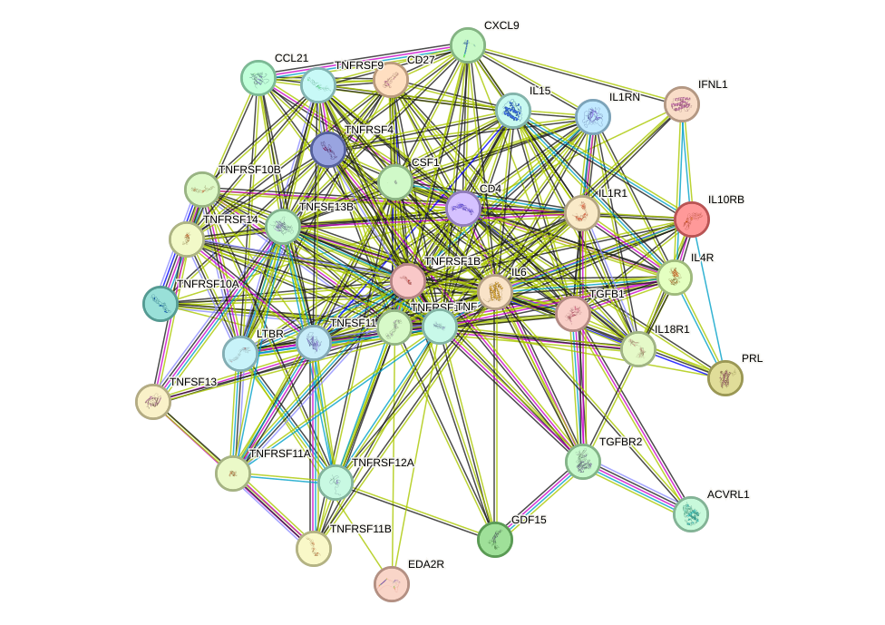
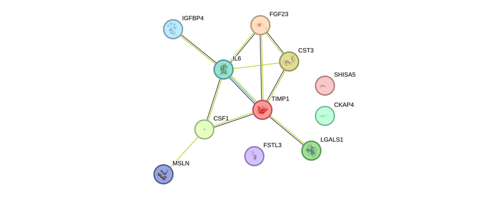
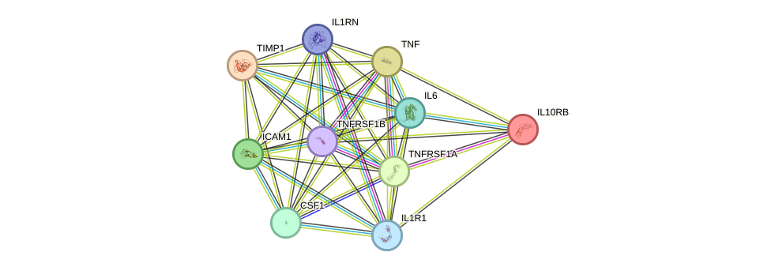
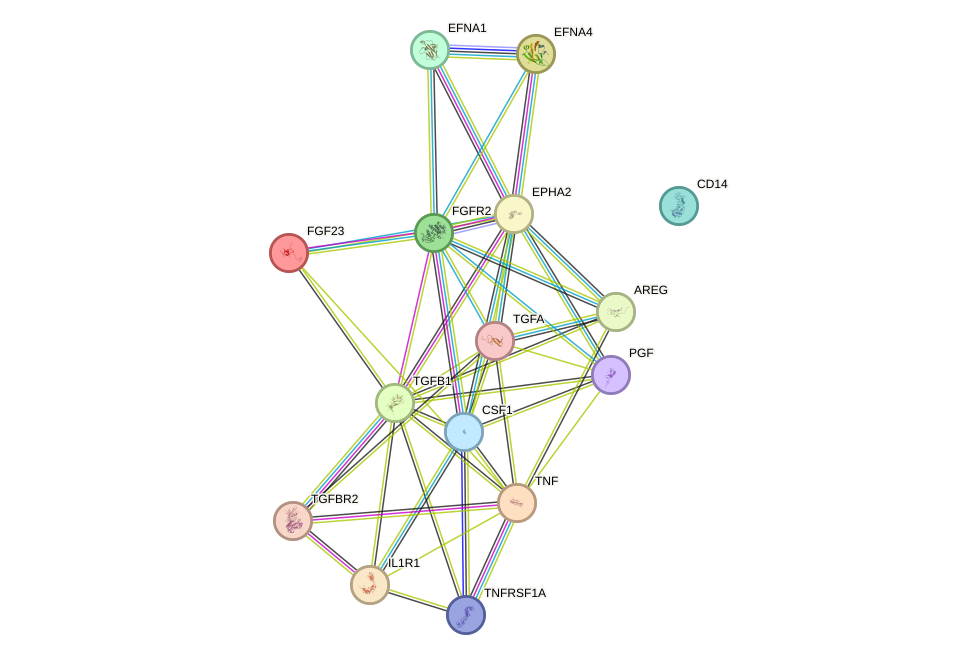
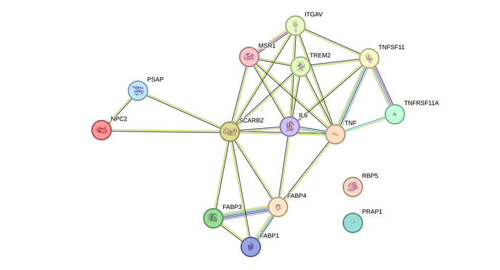

Depression is a common and disabling psychiatric disorder characterized by persistent low mood, anhedonia, cognitive disturbance, and broad alterations in stress, immune, and metabolic regulation (Disease code: depression). In the analysis of the United Kingdom Biobank Pharma Proteomics Project data, circulating levels of 215 plasma proteins were significantly associated with depression in 49,095 controls and 3,203 cases after Bonferroni correction at P < 0.000000001. Understanding the molecular basis of depression reflected by these 215 proteins is essential because the disorder affects multiple biological systems, and the strength of the statistical signal in this case-only versus control comparison suggests that the associated protein set captures robust disease-relevant biology rather than isolated markers.
To define the biological landscape represented by these proteins, we performed a comprehensive functional enrichment analysis on all 215 proteins, screening genuine biological pathways and processes from Reactome, the Kyoto Encyclopedia of Genes and Genomes, and WikiPathways together with Gene Ontology biological processes, with the ranked results summarized in Table 1. Complementary phenotype associations, tissue and cell expression patterns, disease-map links, and other supporting functional evidence are reported separately in Table 2. Across these analyses, we identified 81 significantly enriched terms; the genuine pathways and biological processes are ranked in Table 1, while the additional supporting associations in Table 2 provide orthogonal context for interpretation.
The enriched results indicate that depression is strongly linked to coordinated disturbances in immune and inflammatory regulation, cytokine-mediated communication, intracellular signaling, stress-hormone responsiveness, and lipid handling. The most significant signal was cytokine-cytokine receptor interaction, which included 34 associated proteins and reached P = 5.25 × 10⁻19, far exceeding the significance levels of most other terms. This immune-centered pattern was reinforced by enrichment of interleukin-10 signaling with 10 proteins at P = 1.44 × 10⁻7, blood based neuroinflammation markers with 6 proteins at P = 5.79 × 10⁻5, and cytokines and inflammatory response with 6 proteins at P = 1.29 × 10⁻4. Additional signals extended this framework into intracellular regulation and stress biology, including post-translational protein phosphorylation with 11 proteins at P = 5.14 × 10⁻5, the mitogen-activated protein kinase signaling pathway with 15 proteins at P = 1.07 × 10⁻3, and response to glucocorticoid with 4 proteins at P = 3.83 × 10⁻3. Lipid localization was also significantly enriched, with 15 proteins at P = 1.58 × 10⁻4, suggesting that membrane and metabolic organization may contribute alongside inflammatory signaling. Together, these findings support a model in which depression involves interconnected abnormalities in cytokine signaling, neuroinflammatory activity, phosphorylation-dependent signal transduction, endocrine stress response, and lipid distribution.
In the following sections, we examine the highest-ranked pathways and their protein interaction structure in greater detail to clarify how these statistically supported biological themes may contribute to the molecular framework of depression.
In Table 1, we rank the enriched biological pathways on the basis of a combination of statistical significance, biological coherence, and relevance to depression. A dominant theme is immune and inflammatory dysregulation, led by the cytokine-cytokine receptor interaction pathway (KEGG:04060, p = 5.25 × 10−19, 34 associated proteins), which strongly supports the view that altered cytokine signaling is a central feature of depression. This interpretation is further supported by enrichment of blood based neuroinflammation markers (WP:WP5548, p = 5.79 × 10−5, 6 proteins), cytokines and inflammatory response (WP:WP530, p = 1.29 × 10−4, 6 proteins), and interleukin-10 signaling (REAC:R-HSA-6783783, p = 1.44 × 10−7, 10 proteins). Taken together, these pathways are consistent with a broad literature indicating that depression is associated with elevated inflammatory mediators, altered immune-to-brain communication, and disruption of anti-inflammatory signaling that may influence mood, motivation, and stress sensitivity.
This inflammatory pattern also provides a useful framework for interpreting the additional enriched pathways, which appear to extend the same biological signal into intracellular regulatory mechanisms. In addition, the enrichment of the mitogen-activated protein kinase signaling pathway (KEGG:04010, p = 1.07 × 10−3, 15 proteins) and post-translational protein phosphorylation (REAC:R-HSA-8957275, p = 5.14 × 10−5, 11 proteins) suggests that intracellular signal transduction and phosphorylation-dependent regulation may also be important in depression biology. These pathways have been linked in the literature to stress-induced changes in neuronal plasticity, propagation of inflammatory signals, and altered cellular responses to environmental challenges. The response to glucocorticoid biological process (GO:0051384, p = 3.83 × 10−3, 4 proteins) further connects these findings to hypothalamic-pituitary-adrenal axis dysfunction, a well-established feature of depression, in which impaired glucocorticoid responsiveness may amplify inflammation and disturb emotional regulation.
A further layer of interpretation emerges when considering metabolic and membrane-related processes alongside these signaling pathways. Finally, the enrichment of lipid localization (GO:0010876, p = 1.58 × 10−4, 15 proteins) points to altered lipid transport and distribution as another potentially relevant mechanism. This may be important because lipid homeostasis influences membrane composition, receptor function, production of inflammatory mediators, and brain energy balance, all of which have been implicated in depressive pathology. Overall, the top-ranked pathways converge on a model in which depression involves coordinated abnormalities in cytokine signaling, neuroinflammatory activity, stress hormone response, intracellular phosphorylation networks, and lipid handling, with the very low p-values observed for several pathways providing strong statistical support for these interconnected biological mechanisms.
Table 1: Top Enriched Pathways and Biological Processes (ranked)
| Term ID | Name | Associated Proteins Counts | Ranking Score (lower=better) | p-value | Evidence Type |
|---|---|---|---|---|---|
| KEGG:04060 | Cytokine-cytokine receptor interaction | 34 | 0.142 | 5.255e-19 | KEGG pathway |
| WP:WP5548 | Blood based neuroinflammation markers | 6 | 0.223 | 5.791e-05 | WikiPathways pathway |
| WP:WP530 | Cytokines and inflammatory response | 6 | 0.240 | 1.293e-04 | WikiPathways pathway |
| REAC:R-HSA-8957275 | Post-translational protein phosphorylation | 11 | 0.263 | 5.139e-05 | Reactome pathway |
| REAC:R-HSA-6783783 | Interleukin-10 signaling | 10 | 0.311 | 1.445e-07 | Reactome pathway |
| KEGG:04010 | MAPK signaling pathway | 15 | 0.315 | 1.069e-03 | KEGG pathway |
| GO:0051384 | response to glucocorticoid | 4 | 0.357 | 3.832e-03 | GO biological process |
| GO:0010876 | lipid localization | 15 | 0.376 | 1.578e-04 | GO biological process |
Table 2: Supporting Molecular Evidence by Type (phenotype, expression, disease, regulatory, and Gene Ontology function/component associations)
Molecular Functions
| Term ID | Name | Associated Proteins Counts | Ranking Score (lower=better) | p-value | Evidence Type |
|---|---|---|---|---|---|
| GO:0019955 | cytokine binding | 14 | 0.168 | 4.954e-08 | GO molecular function |
| GO:0038024 | cargo receptor activity | 8 | 0.192 | 8.590e-06 | GO molecular function |
| GO:0030246 | carbohydrate binding | 11 | 0.304 | 4.252e-06 | GO molecular function |
Cellular Components
| Term ID | Name | Associated Proteins Counts | Ranking Score (lower=better) | p-value | Evidence Type |
|---|---|---|---|---|---|
| GO:0043235 | receptor complex | 24 | 0.167 | 2.682e-09 | GO cellular component |
| GO:0005788 | endoplasmic reticulum lumen | 17 | 0.334 | 2.031e-06 | GO cellular component |
| GO:0005770 | late endosome | 9 | 0.406 | 1.795e-02 | GO cellular component |
Disease Associations
The pathway-level enrichment is also complemented by disease association patterns, which broadly align with the inflammatory signal described above.
| Term ID | Name | Associated Proteins Counts | Ranking Score (lower=better) | p-value | Evidence Type |
|---|---|---|---|---|---|
| KEGG:05323 | Rheumatoid arthritis | 11 | 0.075 | 3.959e-06 | KEGG disease map |
| KEGG:05166 | Human T-cell leukemia virus 1 infection | 12 | 0.450 | 2.518e-03 | KEGG disease map |
| KEGG:05321 | Inflammatory bowel disease | 5 | 0.491 | 3.306e-02 | KEGG disease map |
Phenotype Associations
Although these phenotype associations are less directly tied to depression, they may still provide additional context for the broader biological profile captured by the enriched proteins.
| Term ID | Name | Associated Proteins Counts | Ranking Score (lower=better) | p-value | Evidence Type |
|---|---|---|---|---|---|
| HP:0002653 | Bone pain | 9 | 0.444 | 1.079e-02 | Human Phenotype Ontology term |
| HP:0002103 | Abnormal pleura morphology | 11 | 0.965 | 2.146e-02 | Human Phenotype Ontology term |
Tissue / Cell Expression
Finally, the tissue and cell expression enrichments offer an additional layer of supporting evidence by indicating where these proteins may be preferentially represented.
| Term ID | Name | Associated Proteins Counts | Ranking Score (lower=better) | p-value | Evidence Type |
|---|---|---|---|---|---|
| HPA:0401291 | Rectum; endocrine cells[≥Low] | 23 | 0.360 | 2.788e-06 | Human Protein Atlas expression |
| HPA:0030891 | Appendix; goblet cells[≥Low] | 26 | 0.630 | 1.254e-08 | Human Protein Atlas expression |
| HPA:0031293 | Appendix; endocrine cells[High] | 16 | 0.690 | 4.335e-06 | Human Protein Atlas expression |
Building on the ranked summary above, the following sections provide a more detailed discussion of the top enriched pathways.
The cytokine-cytokine receptor interaction pathway comprises the network of secreted immune signaling proteins, including interleukins, chemokines, interferons, colony-stimulating factors, tumor necrosis factor family ligands, and growth factors, together with their cognate cell-surface receptors that transmit extracellular inflammatory and immunoregulatory signals into transcriptional, metabolic, and functional cellular responses [1] [2]. This pathway coordinates communication among peripheral immune cells, vascular cells, glial cells, and neurons, and functionally intersects with signal transducer and activator of transcription signaling, mitogen-activated protein kinase signaling, and phosphatidylinositol 3-kinase-protein kinase B signaling, thereby linking immune activation to broad changes in cell survival, synaptic regulation, and tissue remodeling [2]. In depression-related research, enrichment of this pathway has been repeatedly detected in transcriptomic, epigenomic, and proteomic analyses across multiple clinical and preclinical contexts, including major depressive disorder models, post-stroke depression, depression in Parkinson disease, depression-associated plasma proteomic signatures, and depression comorbid with inflammatory or systemic diseases [3] [4] [1] [5] [6] [7]. The recurrence of this pathway across these studies indicates that cytokine-mediated ligand-receptor signaling is not merely a peripheral epiphenomenon, but may represent a central biological interface through which immune dysregulation can influence brain circuits relevant to mood, cognition, motivation, and stress adaptation [8] [1] [5].
Building on this general framework, the collected literature supports a model in which abnormal cytokine-cytokine receptor interaction may contribute to depression by coupling immune activation to altered neural plasticity, neurotransmission, and behavioral regulation. In animal models of chronic stress-induced depression, differentially expressed genes in the nucleus accumbens were significantly enriched in the cytokine-cytokine receptor interaction pathway together with gamma-aminobutyric acid and dopaminergic synapse pathways, suggesting that inflammatory signaling is integrated with reward-circuit and inhibitory neurotransmission abnormalities central to depressive phenotypes [3]. A similar enrichment was observed in post-stroke depression transcriptomic studies, indicating that after cerebrovascular injury, cytokine-receptor signaling may participate in the molecular remodeling that links brain injury to depressive behavior [4] [2]. Mechanistic support is strengthened by the atherosclerosis comorbid depression study, in which shared differentially expressed genes were enriched in cytokine-cytokine receptor interaction, inflammatory pathways were activated in brain tissue, hippocampal and prefrontal synaptic plasticity was impaired, and interleukin 1 beta directly reduced SH3 and multiple ankyrin repeat domains 2 expression in cellular experiments, thereby connecting inflammatory cytokine signaling to synaptic structural damage relevant to depression [6]. Human studies further indicate that this pathway is clinically relevant: plasma immune factor networks putatively related to cytokine-cytokine receptor interaction were associated with anxiety, depression, and memory complaints in adults with and without methamphetamine dependence [8], and large-scale plasma proteomics identified cytokine-cytokine receptor interaction as the most significant pathway among proteins that improved depression classification [5]. Epigenomic evidence in Parkinson disease also supports this relationship, because depression in affected patients was associated with differential methylation enriched in cytokine-cytokine receptor interaction and other immune pathways, together with greater immune activation and accelerated immune aging in those with current depressive symptoms [1]. Additional comorbidity studies reinforce the same framework: chronic rhinosinusitis with depression showed shared enrichment of cytokine-cytokine receptor interaction and improvement of depressive-like behavior after iodothyronine deiodinase 2 overexpression [7], while depressive symptom profiles linked to future cardiometabolic disease were associated with proteins enriched in this pathway [9]. Collectively, these findings suggest that dysregulated cytokine-receptor signaling may promote depression by driving neuroinflammation, altering glial-neuronal communication, engaging signal transducer and activator of transcription and related intracellular cascades, and ultimately impairing synaptic and circuit-level functions that govern mood, motivation, and cognition [2] [6] [1].
Against this literature background, the present enrichment results appear broadly consistent with prior observations in depression-related studies. In the function enrichment analysis for depression, 34 proteins were significantly enriched in the cytokine-cytokine receptor interaction pathway, a signaling system that integrates secreted immune mediators with their cognate cell-surface receptors to regulate inflammatory, immunoregulatory, transcriptional, metabolic, and cellular response programs [1] [2]. In the context of depression, repeated enrichment of this pathway across transcriptomic, epigenomic, and proteomic studies supports the interpretation that immune ligand-receptor signaling may represent a central biological interface linking immune dysregulation to mood-related and stress-related neural processes [3] [4] [1] [5] [6] [7].
To further characterize this enriched set, network-level analysis provides a more detailed view of how these proteins may relate to one another. Within this 34-protein set, 80 high-confidence protein-protein association edges were retained, connecting 31 proteins, which corresponds to 91.2 percent of all analyzed proteins, with a mean retained interaction score of 0.886. The network was therefore largely connected, with the main connected component containing 31 proteins and 80 edges, while 3 proteins, namely EDA2R, PRL, and TNFRSF9, had no retained edges under the current confidence threshold. The most connected proteins were TNF with degree 20 and weighted score 18.036, IL6 with degree 14 and weighted score 12.672, TNFRSF1A with degree 13 and weighted score 11.304, CD4 with degree 11 and weighted score 9.605, and TNFSF11 with degree 7 and weighted score 6.209. The strongest retained associations all reached a score of 0.999, including TNFRSF1A-TNFRSF1B, TNFRSF11A-TNFSF11, TGFB1-TGFBR2, TNF-TNFRSF1A, TNF-TNFRSF1B, CCL21-CXCL9, TNFRSF11B-TNFSF11, and IL1R1-IL1RN, indicating a dense high-confidence immune signaling network, although these STRING associations should be interpreted as high-confidence functional associations rather than uniformly direct physical binding.
We include the protein-protein interaction network visualization below together with the interactive STRING network page.

Having outlined the overall network structure, it is useful to consider several individually notable proteins in greater detail. During the function enrichment analysis, we identified serveral significant proteins. We will introduce them in-details in the following.
TNFRSF9 is the most compelling candidate in this list for a meaningful connection to depression because it directly regulates CD8+ T-cell survival, effector function, and mitochondrial activity, placing it at the intersection of immune activation and cellular energetics (By similarity). These processes are highly relevant to contemporary models of depression, which increasingly implicate chronic immune dysregulation and altered immunometabolic states in disease pathophysiology. In particular, a receptor that strengthens cytotoxic T-cell responses could contribute to the inflammatory tone that is frequently associated with depressive symptoms, especially in contexts of chronic infection, cancer, or systemic immune activation. Its role in mitochondrial activity is additionally notable because mitochondrial dysfunction and impaired bioenergetics are recurrent themes in depression research. Thus, TNFRSF9 stands out as a plausible link between immune-mediated and metabolic mechanisms that may influence vulnerability to depression.
In a related but somewhat distinct way, EDA2R may also be relevant because it converges on major stress-responsive and inflammation-responsive signaling pathways. EDA2R is potentially relevant to depression because it activates the NF-kappa-B and JNK signaling pathways, two major stress- and inflammation-responsive cascades. This is important because neuroinflammatory signaling and stress-activated kinase pathways have been widely implicated in the biological mechanisms underlying depression. The involvement of TRAF3 and TRAF6 further emphasizes that EDA2R participates in canonical inflammatory signal transduction. Although the protein is not a classical depression gene, its ability to engage NF-kappa-B and JNK suggests a plausible mechanistic connection to depressive pathology through inflammatory and cellular stress responses.
By comparison, PRL appears to have a more indirect connection, but it may still be relevant in specific clinical contexts. PRL is noteworthy because prolactin is a neuroendocrine hormone with strong relevance to reproductive physiology and the postpartum state, a period during which depression risk can be markedly altered. Although the function provided here emphasizes its role in promoting lactation, this biology is still potentially relevant to depression because postpartum endocrine adaptations are closely tied to mood regulation. In particular, prolactin may be most relevant in the context of postpartum depression rather than major depression broadly. However, based on the limited functional annotation provided here, the depression connection is more indirect than for proteins involved in immune or inflammatory signaling.
Beyond these individually discussed proteins, the broader biological interpretation becomes clearer when the connected subset is considered as a functional module. There are also small set of proteins function together to form a cluster.The cluster is most consistently characterized as a densely connected cytokine-receptor and immune signaling network that integrates TNF/TNFR, IL-1, IL-6, interferon-lambda, IL-4, IL-15, IL-18, TGF-beta, chemokine, and TNFSF/TNFRSF pathways. Network topology supports this interpretation, with all 31 proteins contained in a single connected component linked by 80 high-confidence retained associations (mean score 0.886), and with TNF, IL6, and TNFRSF1A emerging as the principal hubs. Functionally, TNF and its receptors TNFRSF1A and TNFRSF1B define a major inflammatory and cell-fate axis, as TNFRSF1A is a receptor for TNF-alpha and can recruit FADD and caspase-8 to initiate apoptotic signaling, whereas TNFRSF1B-associated adaptor signaling regulates NF-kappa-B, JNK, cell survival, and apoptosis [10]. Additional death-receptor signaling is represented by TNFRSF10A, a receptor for TNFSF10/TRAIL that forms a death-inducing signaling complex with FADD and caspase-8 to trigger apoptosis while also promoting NF-kappa-B activation [11] [12] [10]. In parallel, IL1R1 and IL1RN define an IL-1-related signaling node, while IL6 provides a potent pro-inflammatory trans-signaling mechanism through soluble IL6R that extends IL6 responsiveness to cells lacking membrane IL6R and is described as causative for the pro-inflammatory properties of IL6 and important in chronic inflammatory disease [13]. The high-confidence retained associations among TNF, TNFRSF1A, TNFRSF1B, IL1R1, and IL6 therefore support a coherent inflammatory core, although these STRING-based associations should be interpreted as high-confidence protein associations and not uniformly as direct physical interactions unless supported by the listed evidence types. Antiviral and interferon-responsive signaling is also embedded in the cluster through IFNL1 and IL10RB, whose receptor complex activates the JAK/STAT pathway and induces interferon-stimulated genes that contribute to an antiviral state. Related cytokine signaling modules include IL4R, which activates JAK1/JAK3-STAT6 signaling and regulates antibody production, inflammation, and effector T-cell responses [14] [15] [16] [17]; IL15, which stimulates proliferation of natural killer cells, T cells, and B cells and activates JAK1/JAK3 with downstream STAT3 and STAT5 phosphorylation [18] [19] [20] [21] [22] [23] [24]; and IL18R1, which binds IL18 and contributes to IL18-mediated IFNG synthesis from Th1 cells and cytokine production [25]. Chemokine-guided immune-cell trafficking is represented by CCL21, which stimulates chemotaxis, preferentially attracts naive and activated T cells, and may mediate lymphocyte homing to secondary lymphoid organs, together with CXCL9, which may regulate the growth, movement, or activation of cells participating in immune and inflammatory responses. The cluster further contains regulators of adaptive immunity and costimulation, including CD27, which promotes T-cell receptor-mediated apoptosis and inhibits NF-kappa-B, TNFRSF4 and TNFRSF14, which modulate NF-kappa-B/JNK-linked survival and effector responses, and TNFSF13/TNFSF13B, which promote B-cell survival and humoral immunity. TGF-beta pathway components add an immunoregulatory and tissue-remodeling dimension: TGFB1 and TGFBR2 mediate canonical SMAD-dependent and non-canonical signaling controlling cell-cycle arrest, wound healing, extracellular matrix production, immunosuppression, carcinogenesis, and apoptosis, while ACVRL1-linked signaling contributes to angiogenesis control and endothelial SMAD1 signaling [26]. Myeloid and stromal remodeling functions are also present through CSF1R signaling, which regulates survival, proliferation, and differentiation of monocytes/macrophages, promotes release of pro-inflammatory chemokines, activates ERK, JNK, PI3K-AKT, SRC-family kinases, and STAT3/STAT5, and has a role in microglial development in the central nervous system. Finally, TNFSF11/TNFRSF11A/TNFRSF11B connect immune activation to osteoclastogenesis, dendritic-cell function, calcium oscillation, NFATC1 activation, and bone resorption [27] [28] [29] [30] [31] [32] [33]. In relation to depression, the biological relevance of this cluster lies in its convergence on processes repeatedly implicated in neuroimmune dysregulation: sustained pro-inflammatory signaling, cytokine amplification, immune-cell recruitment, apoptosis/survival switching, and central nervous system-relevant signaling. IL6 trans-signaling is explicitly linked to chronic inflammatory states and to regulation of energy and glucose homeostasis in the central nervous system, while IL1R1/IL1RN can mediate IL1B-induced neuronal activity and potentiate NMDA-induced calcium influx through Akt signaling, providing a plausible route by which inflammatory cues influence neuronal function. IL4 is also noted to participate in higher brain functions such as memory and learning, and CSF1R may contribute to microglial development in the central nervous system, further connecting this network to brain-relevant immune regulation [13]. Thus, this cluster supports a model in which inflammatory cytokine and receptor systems, balanced by immunoregulatory and tissue-remodeling pathways, could contribute to depression by promoting persistent peripheral and central immune activation, altering neuronal activity and plasticity, and reshaping neuroimmune homeostasis. The network evidence for this interpretation is strengthened by the single connected component, the high mean retained association score, and particularly strong retained pairs such as TNF-TNFRSF1A, TNF-TNFRSF1B, TGFB1-TGFBR2, IFNL1-IL10RB, IL1R1-IL1RN, and TNFRSF11A-TNFSF11, several of which include experimental and/or physical evidence in the retained STRING annotations; however, the broader network should still be interpreted conservatively as a high-confidence functional association module rather than a map of uniformly direct physical binding events.
Blood-based neuroinflammation markers comprise circulating proteins, cytokines, chemokines, lipid mediators, immune receptors, and infection-related antibodies that reflect activation of peripheral immune pathways linked to inflammatory signaling in the brain [34] [35] [36]. In depression research, the most frequently studied blood markers include C-reactive protein, interleukin-6, tumor necrosis factor alpha, interleukin-1 beta, chemokines, soluble triggering receptor expressed on myeloid cells 2, and prostaglandin-related metabolites, because these molecules can index systemic inflammatory tone, microglial-related signaling, oxidative stress, and immune-metabolic dysregulation relevant to mood pathology [37] [38] [39] [36] [34]. Accumulating evidence indicates that depression is not biologically uniform, and inflammatory signatures differ across clinical subtypes, with atypical depression showing higher C-reactive protein, interleukin-6, tumor necrosis factor alpha, body mass index, and metabolic disturbance, whereas melancholic depression more strongly associates with hypothalamic-pituitary-adrenal axis hyperactivity [37]. Systematic review evidence further suggests that interleukin-6 and interleukin-1 beta may be elevated in melancholic depression relative to controls and some non-melancholic cases, although subtype discrimination based on peripheral inflammatory markers remains incomplete [40]. Blood-based neuroinflammation markers also extend beyond classical cytokines to include lipid inflammatory products and oxidative stress-related metabolites, as illustrated by altered prostaglandin metabolism in depression-anxiety comorbidity and by lipid peroxidation mediators associated with depressive-like phenotypes after chronic acrylamide exposure [36] [41]. In addition, serological evidence of immune activation against cytomegalovirus has been associated with major depression, suicide, and postmortem indicators of brain inflammation and microglial activation, supporting the concept that peripheral immune events may map onto central neuroinflammatory processes in mood disorders [35]. Overall, this pathway represents a translational interface between peripheral immune activation and central nervous system dysfunction, integrating stress biology, metabolic imbalance, oxidative injury, blood-brain barrier disturbance, and microglial activation into a measurable blood-based framework relevant to depression [34] [41] [39] [42].
Building on this pathway definition, the collected literature suggests that blood-based neuroinflammation markers are related to depression because they capture a biologically meaningful route through which stress, immune activation, metabolic disturbance, and altered brain immune signaling may converge on depressive symptoms and clinical heterogeneity [34] [37]. Clinical and review evidence consistently shows that patients with depression often exhibit increased peripheral proinflammatory mediators, particularly interleukin-6, tumor necrosis factor alpha, interleukin-1 beta, and C-reactive protein, and these inflammatory changes are proposed to influence monoamine signaling, neuroplasticity, and hypothalamic-pituitary-adrenal axis function, thereby promoting depressive symptom formation and persistence [34] [37] [40]. This relationship appears to be subtype-sensitive rather than uniform, because atypical depression is more strongly linked to inflammatory and metabolic dysregulation, whereas melancholic depression is more strongly associated with endocrine stress-axis activation, suggesting that blood inflammatory markers may help identify biologically distinct depressive phenotypes [37]. Peripheral markers may also reflect stress-related vulnerability within depression: higher plasma soluble triggering receptor expressed on myeloid cells 2 was observed in major depressive episodes and statistically mediated part of the association between threatening life events and depression, while higher brain translocator protein binding, a marker of neuroinflammatory processes measured with positron emission tomography, was associated with greater stress-related suicidal ideation and negative affect in depressed individuals [39] [42]. Additional support for this pathway comes from studies linking peripheral immune activation to central inflammatory states, including the finding that cytomegalovirus seropositivity was associated with major depression, suicide, and postmortem evidence of brain inflammation and microglial activation, implying that blood immune signatures may index mechanisms extending into the brain [35]. Metabolic and lipid-inflammatory pathways further strengthen this model, because frequent fried food intake was associated with increased depression risk in a large population study, and chronic acrylamide exposure induced depressive-like behavior together with blood-brain barrier-related changes, cerebral lipid metabolism disturbance, oxidative stress, and neuroinflammation [41]. Consistently, altered cytokine profiles in late-life depression, including increased interleukin-6 and reduced selected chemokines, were associated with cognitive dysfunction, suggesting that blood inflammatory markers may also help explain the overlap between depressive symptoms and cognitive impairment in older adults [38]. Preliminary therapeutic evidence also supports the biological relevance of this pathway, as immune-modulating strategies such as low-dose interleukin-2 improved depressive symptoms in bipolar depression while expanding regulatory T cells, and antidepressant response in a stress-based animal model was accompanied by reduced hypothalamic-pituitary-adrenal axis activity with partial modulation of inflammatory mediators [43] [44]. Taken together, the pathway appears related to depression not merely as a correlate of illness severity, but more cautiously as a possible mechanistic bridge linking environmental stressors, peripheral immune dysregulation, neuroinflammatory signaling, metabolic disturbance, and symptom expression, with potential value for patient stratification, biomarker development, and anti-inflammatory treatment targeting [34] [42] [39] [37] [43].
To connect this broader literature with the present analysis, the enrichment results can be interpreted within the same translational framework. There were 6 depression-associated proteins analyzed in the function enrichment analysis for the pathway describing blood-based neuroinflammation markers as circulating indicators of peripheral immune activation linked to inflammatory signaling in the brain [34] [35] [36]. This protein set is consistent with the pathway emphasis on measurable blood markers of inflammatory tone, microglial-related signaling, oxidative stress, immune-metabolic dysregulation, and subtype-related heterogeneity in depression, including differences involving C-reactive protein, interleukin-6, tumor necrosis factor alpha, interleukin-1 beta, chemokines, soluble triggering receptor expressed on myeloid cells 2, and prostaglandin-related metabolites [37] [38] [39] [36] [34]. The broader biological context further aligns with evidence that atypical depression shows higher inflammatory and metabolic burden, while melancholic depression may show partially distinct immune and stress-axis features, although peripheral marker-based subtype discrimination remains incomplete [37] [40]. Additional support for this pathway framework comes from altered lipid inflammatory products, oxidative stress-related metabolites, and infection-linked serological immune activation associated with depression and neuroinflammatory features [36] [41] [35]. Overall, this enrichment therefore appears to capture a translational interface between peripheral immune activity and central nervous system dysfunction in depression [34] [41] [39] [42].
A more specific view of the enrichment is provided by the retained interaction structure within the 6-protein set. Within this 6-protein set, 1 high-confidence retained protein-protein association was observed, connecting 2 of 6 proteins, which corresponds to 33.3 percent network coverage under the current retained-edge criteria, with a mean retained interaction score of 0.994. The highest-degree proteins were interleukin-6 and tumor necrosis factor, each with degree 1 and weighted score 0.994, and the only retained pair was interleukin-6 to tumor necrosis factor with score 0.994 based on functional association and text-mining evidence; the remaining 4 proteins, adrenomedullin, chitinase-3-like protein 1, neurofilament light chain, and triggering receptor expressed on myeloid cells 2, had no retained edges in this pathway set.
To facilitate interpretation of this sparse but high-confidence network, we include the visualization and external interactive resource below. We include the protein-protein interaction network visualization below together with the STRING network page for interactive inspection.
With this network context in place, the following paragraphs introduce the proteins highlighted by the function enrichment analysis in greater detail. During the function enrichment analysis, we identified serveral significant proteins. We will introduce them in-details in the following. TREM2 stands out as the protein with the clearest potential relevance to depression because its annotated functions directly implicate microglial activity, neuroinflammation, and neuronal survival. In microglia, TREM2-associated signaling is required for phagocytosis of apoptotic neurons, indicating a central role in clearance of cellular debris and maintenance of neural homeostasis [45]. TREM2-associated pathways also regulate microglial superoxide production together with ITGAM/CD11B, a mechanism that can promote neuronal apoptosis during brain development and therefore links this signaling axis to neuron-directed oxidative injury [46]. Moreover, TREM2-associated signaling promotes pro-inflammatory responses in microglia after nerve injury and accelerates degeneration of injured neurons, which is highly relevant because persistent microglial activation and inflammatory neurotoxicity are widely implicated in depressive pathophysiology [47]. Beyond microglia, association of this signaling module with TREM2 in monocyte-derived dendritic cells promotes CCR7 upregulation, dendritic-cell maturation, and survival, supporting a broader role in innate immune activation that could influence peripheral-to-central inflammatory communication in depression [48]. This signaling system also positively regulates IRAK3/IRAK-M expression and IL10 production in liver dendritic cells while suppressing T-cell allostimulatory capacity, suggesting that it can shape the balance between pro-inflammatory and immunoregulatory responses rather than acting as a purely activating pathway [49]. Collectively, these functions make TREM2 especially important in the context of depression because they converge on neuroimmune mechanisms, including microglial phagocytosis, inflammatory amplification, oxidative stress, and neuron loss, all of which are biologically plausible contributors to depressive symptoms and stress-related brain dysfunction [45] [46] [47].
In parallel with this microglia-centered profile, CHI3L1 may be relevant because it points toward chronic inflammation, stress adaptation, and tissue remodeling. CHI3L1 is highly relevant to depression because its functions point to a role in chronic inflammation, stress adaptation, and tissue remodeling, all of which are increasingly connected to depressive disorders. CHI3L1 contributes to T-helper 2 inflammatory responses and IL-13-induced inflammation by regulating allergen sensitization, inflammatory-cell apoptosis, dendritic-cell accumulation, and M2 macrophage differentiation, indicating that it is an active organizer of immune polarization rather than a passive biomarker (PubMed: not available). It also mediates activation of the AKT1 signaling pathway and subsequent IL8 production in colonic epithelial cells, linking CHI3L1 to cytokine-inducing pathways that may contribute to systemic inflammatory states relevant to depression, particularly in the context of gut-brain axis dysfunction (PubMed: not available). In addition, CHI3L1 regulates antibacterial responses in the lung by enhancing macrophage bacterial killing, limiting dissemination, and augmenting host tolerance, supporting a broader role in host-defense programs that can intersect with inflammation-associated behavioral changes (PubMed: not available). Its ability to regulate hyperoxia-induced lung injury, inflammation, and epithelial apoptosis further suggests that CHI3L1 functions in cellular stress responses and damage control, processes that conceptually parallel mechanisms of stress susceptibility in depression (PubMed: not available). Overall, CHI3L1 stands out because it integrates inflammatory signaling, macrophage biology, epithelial stress responses, and tissue remodeling, making it a plausible mediator of the low-grade immune activation and altered peripheral barrier biology often associated with depression. However, the supplied annotation does not include PubMed identifiers tied to these specific CHI3L1 claims, which limits citation-supported mechanistic inference in the present summary.
By comparison, ADM appears more tentative and is supported by a narrower functional annotation. ADM is potentially relevant to depression because adrenomedullin signaling has plausible links to vascular regulation, stress biology, and neuroimmune communication, although the supplied annotation is mechanistically sparse. The key annotated feature is that ADM signals through the CALCRL-RAMP2 and CALCRL-RAMP3 receptor complexes, with greatest potency at CALCRL-RAMP2, indicating receptor-selective signaling that could shape tissue-specific physiological responses. In the context of depression, this is noteworthy because neurovascular dysfunction, altered stress responsivity, and inflammatory-endothelial interactions are increasingly recognized contributors to disease heterogeneity. Nevertheless, because the provided annotation contains no PubMed-cited functional details beyond receptor usage, ADM should be considered an interesting but lower-confidence candidate compared with TREM2 and CHI3L1 for depression-focused interpretation.
A similarly cautious interpretation applies to NEFL, although its potential relevance lies more in neuronal structure than in immune signaling. NEFL is relevant to depression primarily as a potential indicator of neuronal structural integrity rather than as a direct mediator of immune or inflammatory mechanisms. The annotated function indicates that NEFL participates in maintenance of neuronal caliber together with NEFM and NEFH and may cooperate with PRPH and INA to form neuronal filamentous networks, placing it within core axonal cytoskeletal architecture. This is potentially important for depression because altered neuronal connectivity and reduced structural resilience are recurring themes in the disorder, and neurofilament-related changes can reflect axonal injury or neurodegenerative stress. However, the supplied annotation provides only a general structural role and no PubMed-cited disease-specific mechanism, so NEFL is best viewed here as a secondary candidate whose relevance may lie in marking neuroaxonal compromise rather than driving depression pathogenesis directly.
Beyond the individually discussed proteins, the network also contains a small connected unit that may help organize the inflammatory interpretation of the pathway. There are also small set of proteins function together to form a cluster.The cluster is composed of IL6 and TNF and forms a single connected component with one retained high-confidence association (mean score 0.994), with both proteins serving as the highest-degree nodes in this small network; however, the retained network evidence is limited to one STRING-supported functional/text-mining association, so it should be interpreted as a strong functional relationship rather than a demonstrated direct physical interaction. IL6 is represented here through its soluble receptor form, sIL6R, which acts as an agonist of IL6 activity and enables IL6 trans-signaling by allowing the IL6:sIL6R complex to bind IL6ST/gp130 on cells lacking membrane-bound IL6R, thereby extending inflammatory signaling breadth [13]. This trans-signaling pathway is described as causative for the pro-inflammatory properties of IL6 and as an important contributor to chronic inflammatory disease [13]. In addition, the IL6-containing complex is required for induction of VEGF production, linking this node to inflammatory tissue responses [50]. TNF complements this axis by exerting antimicrobial activity against Gram-negative and Gram-positive bacteria, with strongest activity against Gram-negative organisms, and by also acting against the yeast C.albicans [51] [52] [53]. TNF can permeabilize C.albicans membranes through targeting phosphatidylinositol 4,5-bisphosphate, leading to cell fragmentation and death, indicating a direct effector role in host defense [53]. TNF also functions as a ligand for CCR6 and induces chemotaxis of CCR6-expressing cells, including immature dendritic cells and memory T cells, thereby linking antimicrobial defense to immune-cell recruitment [54] [55]. Taken together, the cluster is therefore best understood as a compact inflammatory and immune-recruitment module in which IL6 trans-signaling can amplify and propagate pro-inflammatory responses, while TNF supports host defense and leukocyte trafficking [13] [54] [55]. With respect to depression, the most defensible inference from the supplied evidence is that this cluster may contribute through chronic inflammation, because IL6 trans-signaling is explicitly characterized as pro-inflammatory and important in chronic inflammatory disease, and the TNF component adds immune activation and chemotactic recruitment that could reinforce such inflammatory states [13] [54] [55]. The supplied information also notes that IL6 trans-signaling in the central nervous system regulates energy and glucose homeostasis, suggesting a plausible route by which this inflammatory module could influence depression-relevant systemic and neurobiological processes, although the present cluster evidence does not by itself establish a depression-specific mechanism [13].
The cytokine and inflammatory response pathway comprises coordinated innate and adaptive immune signaling networks that are activated by stress, infection, tissue damage, metabolic disturbance, and other physiological challenges, leading to the production of soluble mediators such as interleukin-1 beta, interleukin-6, tumor necrosis factor alpha, interferon gamma, chemokines, and counter-regulatory anti-inflammatory factors including interleukin-10 and transforming growth factor beta [56] [57] [58]. In the context of depression, this pathway is not limited to peripheral immunity, but extends to neuroinflammatory processes in the brain, where microglia and astrocytes respond to inflammatory signals and reshape neuronal function, synaptic plasticity, and circuit activity in regions involved in mood, reward, and cognition [59] [60] [58]. Mechanistically, inflammatory cytokines can activate toll like receptor 4, nuclear factor kappa B, mitogen activated protein kinase, and nucleotide binding oligomerization domain like receptor family pyrin domain containing 3 inflammasome signaling, thereby amplifying inflammatory tone and linking peripheral immune activation to central nervous system dysfunction [56] [61]. These inflammatory cascades also alter tryptophan metabolism through indoleamine 2,3-dioxygenase 1 and tryptophan 2,3-dioxygenase 2, disrupt monoamine signaling, enhance glutamatergic excitotoxicity, suppress brain derived neurotrophic factor dependent neuroplasticity, and promote microglia mediated neuronal injury, all of which are biologically relevant to depressive symptom formation [56] [58] [60]. Current evidence further indicates that depression is heterogeneous, with only a subgroup of affected individuals showing a clearly elevated inflammatory profile, supporting the concept of an inflammatory subtype or endotype of major depression that may have distinct symptoms and treatment responsiveness [62] [63].
Against this biological background, the available literature suggests that the cytokine and inflammatory response pathway is closely related to depression because inflammatory activation may both precipitate depressive symptoms and shape a biologically distinct disease subtype characterized by immune dysregulation [62] [63] [56]. Direct human experimental evidence comes from a randomized clinical trial in older adults showing that exposure to endotoxin, an inflammatory challenge, induced significantly greater depressed mood and depressive symptoms in participants with insomnia than in controls, even though both groups mounted similar cytokine responses, indicating that vulnerability to depression can arise from heightened affective sensitivity to inflammation rather than from larger cytokine production alone [64]. Observational clinical studies further show that late life depression is associated with increased circulating inflammatory mediators, including interleukin-1 receptor antagonist, chemokine ligand 2, chemokine ligand 4, interferon gamma, and interleukin-17A, supporting the presence of a persistent pro-inflammatory state in depressive illness [65]. In adolescents with major depressive disorder, overweight and obesity were associated with more severe depression, higher suicide risk, and higher inflammatory indices together with elevated interleukin-1 beta and interleukin-6, suggesting that metabolic inflammation can intensify depressive severity [66]. At the mechanistic level, stress and inflammatory stimuli activate microglia, which then release cytokines and neurotoxic mediators that disturb synaptic remodeling, neuronal network activity, and neuroplasticity, thereby promoting depressive-like behavior [59] [60] [58]. Preclinical studies strengthen this interpretation by showing that chronic stress produces hippocampal microglial activation and imbalance between pro-inflammatory and anti-inflammatory microglial states, whereas running exercise reverses these changes, normalizes cytokine production, and alleviates depressive-like behavior through adiponectin receptor 1 and adenosine monophosphate activated protein kinase, nuclear factor kappa B, and signal transducer and activator of transcription 3 related signaling [67]. Additional causal support comes from experiments in which microglial programmed cell death 4 deficiency reduced lipopolysaccharide induced neuroinflammation and depressive-like behavior by facilitating anti-inflammatory peroxisome proliferator activated receptor gamma and interleukin-10 signaling, and this antidepressant-like effect was lost when interleukin-10 signaling was neutralized [68]. Peripheral immune cells may also participate directly, as pro-brain derived neurotrophic factor and p75 neurotrophic receptor signaling was upregulated in blood mononuclear cells from patients with major depression and promoted inflammatory cytokine release, suggesting an upstream immune mechanism that can reinforce inflammatory depression biology [69]. More broadly, reviews converge on the idea that inflammatory cytokines influence hypothalamic pituitary adrenal axis activity, neurotransmitter metabolism, reward and threat circuits, and blood brain barrier and gut brain axis communication, creating a self-reinforcing loop in which stress, systemic inflammation, and brain dysfunction maintain depressive symptoms over time [70] [63] [58] [60]. Taken together, these findings support the view that the cytokine and inflammatory response pathway may be more than an epiphenomenon in depression and could represent a central pathogenic axis in at least a substantial subset of patients, while also remaining a potentially informative source of biomarkers and therapeutic targets for precision treatment [62] [56] [57].
To connect this broader literature with the present dataset, the enrichment results can be considered in light of the pathway-level and network-level observations described below.
In the function enrichment analysis for depression, 6 proteins were mapped to the cytokine and inflammatory response pathway, a pathway that integrates innate and adaptive immune signaling triggered by stress, infection, tissue damage, and metabolic disturbance, with downstream effects on interleukin-1 beta, interleukin-6, tumor necrosis factor alpha, interferon gamma, chemokines, interleukin-10, and transforming growth factor beta, and with established relevance to neuroinflammation, synaptic plasticity, and depressive symptom formation [56] [57] [58] [59] [60] [58] [56] [61] [56] [58] [60] [62] [63].
Consistent with this pathway assignment, the retained protein-protein interaction network showed a compact and highly interconnected structure.
The retained protein-protein interaction network contained 12 high-confidence associations among the 6 pathway proteins, yielding 100.0 percent connectivity with all 6 proteins remaining connected in a single component and a mean retained interaction score of 0.899. Network centrality was highest for interleukin-6 and tumor necrosis factor alpha, each with degree 5 and weighted scores of 4.632 and 4.589, followed by cluster of differentiation 4 with degree 4 and weighted score 3.722, transforming growth factor beta 1 with degree 4 and weighted score 3.547, and interleukin-15 with degree 3 and weighted score 2.686; the strongest retained pairs were interleukin-6 with tumor necrosis factor alpha at 0.994, cluster of differentiation 4 with tumor necrosis factor alpha at 0.968, cluster of differentiation 4 with interleukin-6 at 0.967, interleukin-6 with transforming growth factor beta 1 at 0.960, and transforming growth factor beta 1 with tumor necrosis factor alpha at 0.941. These data indicate a densely connected inflammatory module within the analyzed set, although the retained STRING associations should be interpreted as high-confidence functional associations rather than assumed direct physical binding in every case.
To support this network interpretation visually, we include the protein-protein interaction network representation together with the corresponding external resource.
We include the protein-protein interaction network visualization below together with the interactive STRING network page.
There are also small set of proteins function together to form a cluster. This cluster is consistent with a coordinated immune-inflammatory signaling program because it contains cytokine and immune-regulatory proteins with complementary functions in leukocyte activation, chemotaxis, inflammatory amplification, and tissue response. Tumor necrosis factor alpha contributes antimicrobial defense against Gram-negative and Gram-positive bacteria and Candida albicans, and also acts as a ligand for chemokine receptor 6 to induce chemotaxis of immature dendritic cells and memory T cells, linking host defense to immune-cell recruitment [51] [52] [53] [54] [55]. Interleukin-15 is a major regulator of inflammatory and protective immune responses to microbial invaders and parasites, stimulates proliferation of natural killer cells, T cells, and B cells, promotes cytokine secretion, and induces monocyte production of interleukin-8 and chemokine ligand 2, thereby favoring recruitment of neutrophils and monocytes to sites of infection [18] [19] [20]. Interleukin-15 signaling is delivered through cell-surface interleukin-15 receptor alpha and target-cell interleukin-2 receptor subunit beta and interleukin-2 receptor subunit gamma, activating Janus kinase 1, Janus kinase 3, signal transducer and activator of transcription 3, and signal transducer and activator of transcription 5, and in mast cells can also induce signal transducer and activator of transcription 6 phosphorylation and cytokine release, indicating broad immune-activating capacity [21] [22] [23] [24]. Colony stimulating factor 1 receptor further strengthens the myeloid arm of the cluster because it regulates survival, proliferation, and differentiation of hematopoietic precursor cells, especially monocytes and macrophages, promotes release of pro-inflammatory chemokines in response to colony stimulating factor 1 and interleukin-34, and in the central nervous system may contribute to the development of microglia macrophages. Its downstream signaling includes extracellular signal regulated kinase 1 and extracellular signal regulated kinase 2, c Jun N terminal kinase, phosphoinositide 3 kinase and protein kinase B, SRC family kinases, and signal transducer and activator of transcription 3 and signal transducer and activator of transcription 5, indicating strong capacity to propagate inflammatory and survival signals. Transforming growth factor beta 1 adds a tissue-remodeling and cell-death regulatory element through its positive regulation of cell death in response to transforming growth factor beta 3 during mammary gland involution. Interleukin-6 contributes a distinct pro-inflammatory mechanism through soluble interleukin-6 receptor-mediated trans-signaling, whereby the interleukin-6 and soluble interleukin-6 receptor complex activates glycoprotein 130 on cells lacking membrane interleukin-6 receptor; this process is described as causative for the pro-inflammatory properties of interleukin-6 and important in chronic inflammatory disease, while also regulating vascular endothelial growth factor induction and supporting tissue regeneration during liver injury and energy and glucose homeostasis in the central nervous system [13] [50]. Cluster of differentiation 4 links the cluster to adaptive immunity and host-pathogen interface because it serves as the primary receptor for human immunodeficiency virus type 1 and also acts as a receptor for human herpesvirus 7 [71] [72] [73] [74] [75]. In the retained association network, all six proteins form one connected component with 12 high-confidence STRING-derived associations and a high mean score of 0.899, with interleukin-6 and tumor necrosis factor alpha emerging as the principal hubs, each with degree 5, followed by cluster of differentiation 4 and transforming growth factor beta 1, each with degree 4. These quantitative features support the interpretation that inflammatory cytokine signaling is the organizing feature of the cluster; however, because the retained edges are supported by STRING functional and text-mining evidence, they should be interpreted as high-confidence biological associations rather than direct physical interactions. With respect to depression, the most plausible implication of this cluster is that it may represent a convergent neuroimmune-inflammatory program: interleukin-6 trans-signaling is explicitly pro-inflammatory and active in central nervous system regulation of energy and glucose homeostasis, colony stimulating factor 1 receptor may influence microglial biology, and tumor necrosis factor alpha, interleukin-15, and colony stimulating factor 1 receptor collectively promote chemotactic, cytokine, and myeloid activation states that could sustain chronic inflammatory tone. Such a configuration is biologically relevant to depression because persistent inflammatory signaling, altered central nervous system immune-cell regulation, and disturbed systemic-to-central immune communication are mechanistically compatible with depressive pathophysiology, although this dataset supports that inference indirectly through the supplied immune and central nervous system-related functions rather than through depression-specific experimental evidence [13].
Post-translational protein phosphorylation is a reversible regulatory process in which protein kinases add phosphate groups, usually to serine, threonine, or tyrosine residues, and protein phosphatases remove them, thereby altering protein conformation, localization, stability, molecular interactions, and signaling output. In the nervous system, this pathway is a central mechanism for translating calcium influx, neurotransmitter receptor activation, and intracellular second-messenger signals into durable changes in synaptic efficacy and neuronal function [76]. Phosphorylation is particularly important for the control of excitatory synapses, where it regulates alpha-amino-3-hydroxy-5-methyl-4-isoxazolepropionic acid receptor trafficking, receptor internalization, and long-term depression or long-term potentiation-like forms of plasticity [77] [78] [79]. Calcium and calmodulin dependent protein kinase two is a major node in this pathway because it couples calcium signaling to both strengthening and weakening of synapses through context-dependent substrate selection and autophosphorylation-dependent activity states [76] [78]. Phosphorylation signaling also interacts with other post-translational modifications, including O-linked beta-N-acetylglucosaminylation and palmitoylation, indicating that post-translational control of neuronal proteins is organized as an integrated network rather than as isolated events [80] [78] [81]. In depression-relevant systems, phosphoproteomic studies have shown that phosphorylation changes are widespread in brain tissue and are especially enriched in proteins involved in synaptic transmission, synapse organization, neuronal connectivity, and energy metabolism [82] [83].
Against this biological background, the available literature suggests that post-translational protein phosphorylation may be closely related to depression because depressive states are associated with broad reprogramming of phosphorylation-dependent signaling in brain circuits that regulate mood, reward, and stress responses [82] [83]. A multi-tissue proteomic integration in patients with depression found that post-translational modifications, particularly phosphorylation, were common among dysregulated proteins, while brain protein interaction networks were enriched for synaptic, neuronal, and respiratory functions, suggesting that abnormal phosphorylation may participate in both synaptic dysfunction and impaired cellular energetics in depression [82]. More direct mechanistic support comes from phosphoproteomic analysis in a chronic unpredictable mild stress model, in which thousands of phosphorylation sites were quantified in the medial prefrontal cortex and nucleus accumbens, revealing that stress-induced depressive-like states prominently altered synaptic transmission-related signaling and that many of these phosphorylation changes were reversed by ketamine treatment [83]. These findings are important because phosphorylation controls long-term depression-like and long-term potentiation-like synaptic remodeling through proteins such as alpha-amino-3-hydroxy-5-methyl-4-isoxazolepropionic acid receptor subunits, drebrin, A-kinase anchoring protein seventy nine or one hundred fifty, and profilin two a, all of which influence receptor trafficking, dendritic spine structure, and synaptic weakening or strengthening, processes widely implicated in the pathophysiology of depression [77] [79] [78] [84]. Calcium and calmodulin dependent protein kinase two is especially relevant because it is a core regulator of activity-dependent plasticity and can mediate both potentiation and depression of excitatory synapses depending on stimulus context and substrate engagement, thereby providing a plausible signaling hub through which chronic stress may reshape mood-related circuits [76] [78]. Additional depression relevance is suggested by phosphorylation-dependent regulation of solute carrier family six member fifteen, a transporter genetically and transcriptionally associated with major depressive disorder, whose major phosphosites, predicted upstream kinases, and co-regulated interactors converge on stress-responsive and erb-b receptor signaling pathways linked to depressive pathobiology [85]. Finally, the pathway may also intersect with monoaminergic and neurodegenerative dimensions of depression, because post-translational regulation of the serotonin transporter can influence antidepressant response, and abnormal phosphorylation of tau has been proposed as a mechanistic bridge between synaptic dysfunction, emotional circuit disturbance, and depressive symptoms, particularly in the context of Alzheimer disease comorbidity [86] [87]. Taken together, the evidence supports a cautious model in which depression may involve maladaptive phosphorylation signaling across synaptic, cytoskeletal, transporter, and metabolic proteins, and therapeutic benefit may arise in part from restoring these phosphorylation networks toward a more adaptive state [82] [83] [85].
Consistent with this broader literature, the enrichment results in the present dataset point to a modest but potentially informative representation of depression-associated proteins in this pathway. There were 11 depression-associated proteins significantly enriched in the pathway of post-translational protein phosphorylation, a reversible regulatory process that controls neuronal signaling, synaptic efficacy, receptor trafficking, and durable forms of synaptic plasticity through coordinated kinase- and phosphatase-mediated phosphate turnover [76]. In depression-relevant systems, this pathway is supported by phosphoproteomic evidence showing widespread phosphorylation changes in brain tissue, with enrichment in proteins involved in synaptic transmission, synapse organization, neuronal connectivity, and energy metabolism [82] [83].
To further contextualize these 11 proteins, the retained high-confidence association network provides a concise view of how many of them remain functionally connected under the current filtering criteria. Within the retained high-confidence protein association network, 2 edges connected 3 of the 11 proteins, corresponding to 27.3 percent network coverage under the current retention criteria, with a mean retained score of 0.882. Interleukin 6 was the highest-degree protein with degree 2 and weighted score 1.765, followed by tissue inhibitor of metalloproteinase 1 with degree 1 and weighted score 0.938, and colony stimulating factor 1 with degree 1 and weighted score 0.827. The connected subnetwork consisted of a single 3-protein component with 2 edges and mean score 0.882, defined by the retained pairs interleukin 6 to tissue inhibitor of metalloproteinase 1 with score 0.938 and colony stimulating factor 1 to interleukin 6 with score 0.827; both associations were supported by functional and text-mining evidence. The remaining 8 proteins, namely cytoskeleton associated protein 4, cystatin C, fibroblast growth factor 23, follistatin like 3, insulin like growth factor binding protein 4, galectin 1, mesothelin, and shisa family member 5, had no retained edges in this pathway set.
We include the protein association network visualization below and provide the corresponding Search Tool for the Retrieval of Interacting Genes and Proteins webpage for interactive inspection.

Having outlined the network structure, it is useful to consider the individual proteins identified by the function enrichment analysis and their possible relevance to depression in a more systematic manner. During the function enrichment analysis, we identified several significant proteins. We will introduce them in detail in the following.
LGALS1 is among the most compelling proteins in this list for a potential connection to depression because its annotated functions converge on immune regulation, apoptosis, and cellular differentiation, all of which are relevant to contemporary models of depressive pathophysiology. In particular, LGALS1 is described as a strong inducer of T-cell apoptosis and as a negative regulator of T helper seventeen cell differentiation via cluster of differentiation sixty nine activation [88]. These functions are notable because depression has repeatedly been linked to immune dysregulation and altered inflammatory signaling; therefore, a molecule capable of shaping T-cell survival and T helper seventeen polarization could plausibly influence neuroimmune states associated with depressive illness [88]. Its additional role in regulating apoptosis, cell proliferation, and cell differentiation further strengthens its relevance, since impaired cellular resilience and maladaptive inflammatory-immune crosstalk are often invoked in depression-related disease mechanisms. Overall, LGALS1 stands out as a biologically plausible depression-linked candidate because it sits at the interface of immune homeostasis and cell fate regulation, two processes frequently implicated in stress-related psychiatric disorders [88].
In a related but somewhat distinct way, proteins linked to growth factor regulation may point toward trophic and metabolic dimensions of depression biology. IGFBP4 is potentially relevant to depression because it directly regulates insulin-like growth factor signaling, a pathway that has broad importance for neuroplasticity, cellular survival, and systemic metabolic-neuroendocrine homeostasis. The protein prolongs the half-life of insulin-like growth factors and alters their interaction with cell-surface receptors, thereby modulating whether insulin-like growth factor-driven growth effects are enhanced or suppressed. This is noteworthy in the context of depression because disturbances in trophic support and endocrine-metabolic signaling are frequently considered part of the biological substrate of mood disorders. Although the provided annotation does not include a PubMed citation, the functional description itself suggests that IGFBP4 may influence depression-related mechanisms through regulation of insulin-like growth factor availability and receptor engagement, with possible downstream consequences for brain plasticity and stress adaptation.
Extending this growth factor and endocrine theme, FGF23 is of interest for depression-related interpretation because the annotation links it to Klotho-associated endocrine biology and inhibition of insulin or insulin-like growth factor one signaling, a pathway with recognized relevance to aging, metabolism, and brain function. The Klotho peptide generated from the membrane-bound isoform may act as an anti-aging circulating hormone and may extend lifespan by inhibiting insulin or insulin-like growth factor one signaling. This is potentially important because depression is often associated with accelerated biological aging phenotypes, metabolic disturbance, and altered neuroendocrine regulation. Thus, a protein functionally connected to Klotho and insulin or insulin-like growth factor one signaling could be relevant to depression through mechanisms involving resilience, systemic aging biology, and metabolic-brain crosstalk. However, the present annotation does not provide a PubMed citation, so this interpretation should be regarded as hypothesis-generating rather than directly literature-supported within the supplied evidence set.
Another protein that may fit into a signaling and remodeling framework is FSTL3, which stands out because it regulates several members of the transforming growth factor beta superfamily, including activins and bone morphogenetic proteins, which are central mediators of cellular signaling, differentiation, and tissue homeostasis. The secreted form binds and antagonizes activin, bone morphogenetic protein two, and myostatin family signaling and is more effective against activin A than activin B. This is potentially relevant to depression because transforming growth factor beta family pathways are closely tied to neuroimmune communication, cellular plasticity, and stress-responsive remodeling. In addition, FSTL3 is involved in hematopoiesis and in adhesion of hematopoietic precursor cells to bone marrow stroma, indicating a broader role in immune and stromal biology. Such functions may matter in depression because altered immune-cell development and inflammatory set points are increasingly considered part of disease pathogenesis. The annotation also notes a possible nuclear role in transcriptional regulation via myeloid or lymphoid or mixed-lineage leukemia translocated to chromosome ten interaction, raising the possibility that FSTL3 could affect gene-expression programs relevant to stress adaptation. No PubMed identifier was supplied for these functions, so the mechanistic link to depression remains inferential within the current dataset.
By comparison, CKAP4 appears less directly connected to canonical depression-related mechanisms, although it may still be relevant at the level of cellular growth control. CKAP4 is less directly connected to depression than the immune- and growth-factor-related proteins above, but it remains potentially relevant because it mediates antiproliferative signaling. The protein functions as a cell-surface receptor for antiproliferative factor and transduces intracellular antiproliferative effects. This may be of interest in depression research because impaired cellular plasticity and reduced regenerative capacity are recurring themes in biological models of mood disorders. Nevertheless, based on the supplied annotation, CKAP4 appears more strongly linked to epithelial growth regulation than to canonical neuroimmune or neurotrophic mechanisms of depression, so it should be considered a secondary candidate rather than a primary one. No PubMed citation was provided in the input for this function.
A similarly cautious interpretation applies to CST3, whose annotation suggests broad relevance to proteolytic regulation rather than a direct disease-specific mechanism. CST3 may have indirect relevance to depression because regulation of cysteine protease activity can influence tissue remodeling, inflammatory responses, and cellular stress pathways. As a local inhibitor of cysteine proteinases, CST3 could affect proteolytic balance in ways that alter immune or neurobiological homeostasis. Such processes are broadly compatible with depression-related mechanisms involving inflammation and altered cellular maintenance. However, the supplied annotation is general and does not provide a direct link to neural, endocrine, or psychiatric biology, so CST3 is best viewed as a plausible but currently less distinctive candidate in this list. No PubMed citation was supplied for this annotation.
Moving further toward proteins with more limited functional overlap with current depression models, MSLN has a relatively indirect connection based on the supplied annotation. MSLN has a relatively limited and indirect connection to depression based on the supplied functional annotation. Its derived megakaryocyte-potentiating factor may enhance megakaryocyte colony formation, suggesting a role in hematopoietic regulation. This could be weakly relevant to depression insofar as platelet and hematopoietic biology sometimes intersect with inflammatory and serotonergic mechanisms. However, compared with proteins such as LGALS1, IGFBP4, or FSTL3, MSLN does not stand out as a strong candidate for meaningful involvement in core depression mechanisms on the basis of the present information alone. No PubMed citation was provided in the input.
Finally, SHISA5 is difficult to prioritize from the present annotation, although a limited connection to calcium biology can still be noted. SHISA5 is difficult to prioritize for depression from the present annotation because the only supplied function is that one isoform has lower calcium two plus affinity than isoform 1 [89]. Calcium handling is broadly important for neuronal signaling, stress responses, and apoptosis, so any protein with altered calcium two plus affinity could, in principle, be relevant to depression-related biology [89]. However, the current description is too limited to support a strong mechanistic interpretation. Therefore, SHISA5 should be considered a low-priority candidate in this dataset unless additional functional evidence becomes available [89].
Beyond the individually annotated proteins, the small connected subnetwork may provide a more integrated view of how inflammatory and remodeling-related functions could converge within this pathway set. There are also small set of proteins function together to form a cluster. The connected component contains all three proteins with two retained high-confidence associations (mean score 0.882), and IL6 is the network hub (degree 2; weighted score 1.765), linking TIMP1 (score 0.938) and CSF1 (score 0.827); however, because the retained evidence is limited to STRING functional association and text-mining support, these links should be interpreted as high-confidence functional associations rather than direct physical interactions. Functionally, IL6 is the central inflammatory mediator in this cluster because soluble IL6R acts as an agonist of IL6 activity, enabling IL6 trans-signaling through glycoprotein one hundred thirty on cells lacking membrane IL6R, and this process is described as causative for the pro-inflammatory properties of IL6 and important in chronic inflammatory disease [13]. IL6 in complex with soluble IL6R is also required for induction of vascular endothelial growth factor production [50], and IL6 trans-signaling in the central nervous system regulates energy and glucose homeostasis, indicating potential relevance to brain-systemic metabolic coupling that may be pertinent to depression-related physiology. CSF1 complements this inflammatory axis by regulating the survival, proliferation, and differentiation of mononuclear phagocytes, especially macrophages and monocytes, and by promoting release of pro-inflammatory chemokines during innate immune and inflammatory responses. In addition, CSF1 signaling activates extracellular signal-regulated kinase one or two, c-Jun N-terminal kinase, phosphoinositide three-kinase and protein kinase B, SRC-family, and signal transducer and activator of transcription pathways, and in the central nervous system it may contribute to development of microglia macrophages; these properties suggest that CSF1 may amplify immune-cell activation programs that can intersect with IL6-centered inflammatory signaling. TIMP1 adds a tissue-remodeling and cell-survival dimension to the cluster by irreversibly inhibiting a broad set of matrix metalloproteinases through binding to their catalytic zinc cofactor, while also functioning as a growth factor that regulates cell differentiation, migration, and cell death via cluster of differentiation sixty three and integrin subunit beta one and participates in integrin signaling. Taken together, the cluster supports a cautious model in which IL6-centered inflammatory signaling, CSF1-associated monocyte or macrophage and possibly microglial regulation, and TIMP1-mediated extracellular matrix control converge on chronic inflammatory and tissue-remodeling states; such processes may be relevant to depression because persistent inflammation, altered central nervous system homeostasis, and dysregulated cellular remodeling are all compatible with mechanisms that could influence depressive pathophysiology, although the present network evidence is modest and functionally inferred rather than demonstrating direct molecular binding.
Interleukin-10 signaling is a canonical anti-inflammatory and immunoregulatory pathway that restrains excessive innate and adaptive immune activation and helps restore tissue homeostasis after inflammatory challenge. In the context of the nervous system, interleukin-10 is produced by immune cells and brain-resident glial populations, and its signaling has been linked to suppression of pro-inflammatory cytokine production, limitation of microglial activation, and promotion of anti-inflammatory cellular states associated with neuroprotection [68] [90] [91]. Experimental studies further indicate that interleukin-10 signaling in the brain engages intracellular programs involving phosphoinositide 3-kinase and protein kinase B, Janus kinase and signal transducer and activator of transcription signaling, and related anti-inflammatory networks that influence synaptic function, neuronal excitability, and glial polarization [92] [90] [91]. In inflammation-associated behavioral pathology, interleukin-10 signaling is not merely a passive marker of immune regulation but may act as an active mediator of recovery, because endogenous brain interleukin-10 is required to terminate persistent inflammatory signaling and normalize expression of indoleamine-2,3-dioxygenase 1 in the prefrontal cortex during resolution of inflammation-induced depressive-like behavior [93]. Additional work shows that interleukin-10 can be induced in disease-relevant brain regions such as the hippocampus and lateral habenula, where it is associated with reduced inflammatory tone, restoration of inhibitory synaptic receptor trafficking, and improvement of stress- or inflammation-related depressive phenotypes [90] [92] [94]. Taken together, interleukin-10 signaling can be understood as a central interface between peripheral immunity, neuroinflammation, tryptophan metabolism, glial state regulation, and neuronal plasticity, all of which are processes repeatedly implicated in depression pathophysiology [93] [68] [92] [90].
Against this biological background, the collected literature supports a model in which impaired or insufficient interleukin-10 signaling may contribute to depression by permitting persistent neuroinflammation, whereas restoration or enhancement of this pathway is associated with behavioral recovery. The strongest mechanistic evidence comes from inflammation-induced depression models showing that resolution of depressive-like behavior requires T lymphocyte-dependent induction of endogenous interleukin-10 in the meninges and prefrontal cortex, and that blockade of interleukin-10 signaling prolongs depressive-like behavior together with sustained indoleamine-2,3-dioxygenase 1 expression, while recombinant interleukin-10 restores recovery [93]. This finding is notable because it links interleukin-10 signaling directly to suppression of the tryptophan and kynurenine pathway, a well-established inflammatory mechanism of depression [93]. Convergent studies indicate that interleukin-10 also acts within microglia to shift the brain immune milieu away from a damaging pro-inflammatory state: activation of adiponectin receptor 2 in microglia increases hippocampal interleukin-10, promotes anti-inflammatory microglial polarization, and alleviates chronic stress-induced depressive-like behavior [90], while loss of programmed cell death 4 in microglia enhances Daxx-mediated peroxisome proliferator-activated receptor gamma and interleukin-10 signaling and protects against lipopolysaccharide-induced depressive-like behavior, an effect abolished by interleukin-10 receptor neutralization [68]. Region-specific evidence further suggests that interleukin-10 signaling influences depression-relevant neural circuitry, because reduced interleukin-10 in the lateral habenula is associated with susceptibility to depression after maternal separation, whereas interleukin-10 restoration rescues phosphoinositide 3-kinase and protein kinase B signaling, gephyrin expression, membrane gamma-aminobutyric acid type A receptor trafficking, and depressive behavior; conversely, neuronal interleukin-10 receptor knockdown is sufficient to induce depressive-like symptoms [92]. Similarly, in neuroinflammation-driven depression, increased interleukin-10 in the habenula accompanies behavioral improvement after p38 signaling inhibition or fluoxetine treatment, supporting the view that interleukin-10 opposes inflammatory signaling in mood-regulating circuits [94]. Other preclinical studies in sepsis-associated and corticosterone-related depression models also show that interventions reducing pro-inflammatory pathways are accompanied by upregulation of interleukin-10 and improvement of depressive phenotypes, reinforcing the idea that interleukin-10 is a functional component of resilience to inflammation-induced mood disturbance rather than a bystander biomarker [95] [91]. Human studies are more complex: peripheral interleukin-10 is elevated in some patients with major depressive disorder and in medically ill populations with depressive symptoms, and higher baseline interleukin-10 has been associated with antidepressant response in some settings, suggesting that circulating interleukin-10 may reflect a compensatory response to immune activation rather than straightforward protection at the systemic level [96] [97] [98]. Overall, the evidence indicates that interleukin-10 signaling is related to depression through coordinated regulation of neuroimmune resolution, microglial phenotype, inflammatory cytokine balance, tryptophan metabolism, and synaptic inhibition within mood-related brain regions, making this pathway a plausible mechanistic biomarker and therapeutic target for inflammation-associated depression [93] [68] [92] [90] [94].
To complement this literature-based interpretation, the enrichment results provide a network-level view of how depression-associated proteins map onto interleukin-10 signaling. There were 10 depression-associated proteins analyzed in the function enrichment analysis of interleukin-10 signaling, a canonical anti-inflammatory and immunoregulatory pathway that restrains excessive innate and adaptive immune activation and helps restore tissue homeostasis after inflammatory challenge. In the nervous system, this pathway has been linked to suppression of pro-inflammatory cytokine production, limitation of microglial activation, promotion of anti-inflammatory cellular states, regulation of phosphoinositide 3-kinase and protein kinase B as well as Janus kinase and signal transducer and activator of transcription signaling, and normalization of indoleamine-2,3-dioxygenase 1 expression during recovery from inflammation-induced depressive-like behavior [68] [90] [91] [92] [93] [94].
Consistent with that framework, the retained protein-protein interaction network was dense, with 25 high-confidence edges among all 10 proteins, indicating that 100.0 percent of analyzed proteins remained connected under the retained-edge criteria. The mean retained interaction score was 0.903, and the network formed a single connected component containing 10 of 10 proteins and 25 edges. The highest-degree proteins were interleukin 6 with degree 9 and weighted score 8.361, tumor necrosis factor with degree 7 and weighted score 6.577, interleukin 1 receptor type 1 with degree 6 and weighted score 5.531, intercellular adhesion molecule 1 with degree 6 and weighted score 5.11, and tumor necrosis factor receptor superfamily member 1A with degree 5 and weighted score 4.789. The strongest retained protein pairs reached scores of 0.999 for interleukin 1 receptor type 1 with interleukin 1 receptor antagonist, tumor necrosis factor with tumor necrosis factor receptor superfamily member 1A, tumor necrosis factor with tumor necrosis factor receptor superfamily member 1B, and tumor necrosis factor receptor superfamily member 1A with tumor necrosis factor receptor superfamily member 1B, while additional highly scored links included interleukin 1 receptor type 1 with interleukin 6 at 0.997, interleukin 6 with tumor necrosis factor receptor superfamily member 1A at 0.997, interleukin 1 receptor type 1 with tumor necrosis factor at 0.996, and interleukin 6 with tumor necrosis factor at 0.994. These retained associations should be interpreted as high-confidence functional or evidence-supported protein associations rather than over-stated as direct physical binding in every case.
To facilitate inspection of these relationships, we include the protein-protein interaction network visualization below together with the STRING network page for interactive inspection.

Building on this visualization, there are also small set of proteins function together to form a cluster. The cluster is most consistently interpreted as an immune-inflammatory signaling module in which cytokine ligands, cytokine receptors, adhesion molecules, and matrix regulators are tightly connected at the protein-association level, with IL6 showing the highest network degree and weighted score (8.361), followed by TNF, IL1R1, ICAM1, and TNFRSF1A. Within this module, TNF is linked with both TNFRSF1A and TNFRSF1B by the strongest retained associations, with a score of 0.999 for each pair, consistent with a core TNF receptor signaling axis that can regulate apoptosis, survival, nuclear factor kappa B, and c-Jun N-terminal kinase pathways. Specifically, TNFRSF1A recruits FADD and caspase-8 to initiate the apoptotic caspase cascade, whereas TNFRSF1B regulates nuclear factor kappa B and c-Jun N-terminal kinase and supports anti-apoptotic signaling through TRAF1 and TRAF2-associated ubiquitin ligase complexes. Together, these features indicate that the cluster integrates inflammatory activation with cell fate control, a combination that may be highly relevant to depression because persistent inflammatory signaling and altered survival or apoptotic balance are plausible contributors to neural and systemic dysfunction. The network also supports close functional coupling among IL1R1, IL1RN, IL6, and TNF, including very strong IL1R1-IL1RN association with a score of 0.999, strong IL1R1-IL6 association with a score of 0.997, and strong IL6-TNF association with a score of 0.994, suggesting convergence of interleukin 1-, interleukin 6-, and tumor necrosis factor-related signaling within the same inflammatory neighborhood. This is notable because the supplied functions indicate that IL1R1 and IL1RN can cooperate with IL1RAP isoform 3 to mediate IL1B-induced neuronal activity and potentiate N-methyl-D-aspartate-induced calcium influx through protein kinase B activation, directly linking this inflammatory arm to neuronal excitability. In parallel, the soluble interleukin 6 receptor acts as an agonist of interleukin 6 activity and enables interleukin 6 trans-signaling on cells lacking membrane interleukin 6 receptor, and this trans-signaling is described as causative for the pro-inflammatory properties of interleukin 6 and important in chronic inflammatory disease; moreover, interleukin 6 trans-signaling in the central nervous system regulates energy and glucose homeostasis [13]. These properties provide a plausible mechanistic bridge to depression, as a network dominated by interleukin 6, tumor necrosis factor, and interleukin 1-related associations could promote chronic inflammatory tone, alter neuronal calcium signaling, and disturb central metabolic regulation. Additional cluster members broaden this interpretation toward innate immunity and neuroimmune communication. IL10RB is a shared receptor component for interleukin 10, interleukin 22, interleukin 26, interleukin 28, and interferon lambda 1 and, together with IFNLR1, mediates interferon lambda 2 and interferon lambda 3-driven Janus kinase and signal transducer and activator of transcription activation and induction of interferon-stimulated genes, indicating an antiviral signaling branch embedded in the cluster. Colony stimulating factor 1 signaling promotes survival, proliferation, and differentiation of mononuclear phagocytes, induces pro-inflammatory chemokine release, activates extracellular signal-regulated kinase 1 and extracellular signal-regulated kinase 2, c-Jun N-terminal kinase, phosphoinositide 3-kinase and protein kinase B, SRC-family kinases, and signal transducers and activators of transcription, and may contribute to microglial macrophage development in the central nervous system, thereby adding a macrophage and microglial regulatory dimension that could influence depression through sustained innate immune activation. Intercellular adhesion molecule 1 contributes an adhesion and immune-interface component; the retained intercellular adhesion molecule 1 links to interleukin 6 and tumor necrosis factor are moderately strong, at 0.947 and 0.944, consistent with integration of inflammatory signaling and leukocyte interaction pathways, although the supplied functional annotation specifically highlights its degradation during human herpesvirus 8 infection rather than a broader homeostatic role. TIMP1 adds an extracellular matrix and trophic signaling element, as it inhibits multiple metalloproteinases, binds catalytic zinc to irreversibly inactivate target matrix metalloproteinases, and also functions as a growth factor regulating differentiation, migration, cell death, and integrin signaling. Its retained associations with interleukin 6, tumor necrosis factor receptor superfamily member 1A, and intercellular adhesion molecule 1 suggest that matrix remodeling and inflammatory signaling are coordinated within this cluster, which may be relevant to depression insofar as chronic inflammation can be accompanied by altered tissue remodeling and cell migration states. Overall, the cluster supports a model in which inflammatory cytokine cross-talk, tumor necrosis factor receptor signaling, interleukin 6 trans-signaling, interleukin 1-linked neuronal activity, innate antiviral responses, myeloid and microglial regulation, and matrix remodeling form a single coordinated module. Because the entire set forms one connected component with dense high-confidence associations, the network evidence supports functional convergence of these processes; however, many retained edges derive from functional, text-mining, and database evidence, so they should be interpreted as high-confidence associations rather than uniformly direct physical interactions. The most depression-relevant features supported directly by the supplied annotations are the pro-inflammatory and chronic-disease role of interleukin 6 trans-signaling, its role in central energy and glucose homeostasis, and the ability of IL1R1 and IL1RN-associated signaling to modulate neuronal N-methyl-D-aspartate-linked calcium influx and protein kinase B activity, together suggesting that this cluster could contribute to depression by coupling systemic inflammation to altered central neuronal and metabolic regulation [13].
The mitogen-activated protein kinase signaling pathway is a conserved intracellular signaling network that transduces extracellular stress, inflammatory, growth factor, and neurotransmitter-related cues into coordinated cellular responses affecting gene transcription, survival, apoptosis, synaptic plasticity, and glial activation [56] [99]. In the context of depression, this pathway is not a single linear cascade but a family of kinase modules that prominently includes extracellular signal-regulated kinase, p38 mitogen-activated protein kinase, and c-Jun N-terminal kinase branches, each of which can exert distinct and sometimes opposing effects on neuronal adaptation and neuroimmune signaling [99] [100] [101]. Upstream regulators relevant to depression include mitogen-activated protein kinase kinase kinase 1, toll-like receptor and myeloid differentiation primary response 88 signaling, interleukin 17 signaling, oxidative stress, and microRNA-mediated post-transcriptional control, all of which converge on mitogen-activated protein kinase activity to shape inflammatory and plasticity-related outputs [99] [102] [103] [100]. Downstream consequences of pathway activation include altered expression of interleukin 6, tumor necrosis factor alpha, interleukin 1 beta, caspase 3, B-cell lymphoma 2, Bcl-2-associated X protein, brain-derived neurotrophic factor, postsynaptic density protein 95, and glutamate receptor ionotropic N-methyl-D-aspartate 2A, thereby linking the pathway to neuroinflammation, cell death programs, and synaptic remodeling that are central to depressive pathophysiology [99]. The pathway also operates in multiple brain cell types implicated in depression, including microglia, astrocytes, neurons, and oligodendrocytes, indicating that its disease relevance extends beyond neurons to broader neuroglial network dysfunction [104] [105] [106] [107].
Building on this biological overview, current evidence suggests that the relationship between the mitogen-activated protein kinase signaling pathway and depression is likely to be mechanistically important rather than incidental. The pathway appears to function as a central molecular interface through which chronic stress, inflammation, oxidative injury, environmental insults, and developmental vulnerability are translated into neuroinflammation, synaptic dysfunction, and behavioral abnormalities [56] [100] [101]. Human and translational studies further suggest that this relationship may be biologically meaningful, as adolescent major depressive disorder subtype analysis identified a subgroup characterized by microglial activation and mitogen-activated protein kinase-driven neuroinflammation, supporting the possibility of depression endophenotypes in which this pathway is especially prominent [108]. Mechanistically, several studies converge on the view that excessive activation of inflammatory branches of the pathway, particularly p38 mitogen-activated protein kinase signaling, may promote depressive phenotypes by increasing pro-inflammatory cytokine production, activating microglia and astrocytes, damaging neurons, and weakening synaptic plasticity [105] [104] [102] [109] [110]. Consistent with this interpretation, experimental inhibition of inflammatory signaling has repeatedly been associated with behavioral improvement, as trihexyphenidyl, Rhodomyrtus tomentosa extract, glabridin, salidroside, melatonin, and direct hippocampal p38 mitogen-activated protein kinase blockade each reduced neuroinflammation and alleviated depression-like behavior in preclinical models [105] [102] [109] [103] [111] [110]. Epigenetic and post-transcriptional regulators place the pathway near the core of depression biology as well: polycomb group 1 suppressed microglia-mediated neuroinflammation by inhibiting nuclear factor kappa B and mitogen-activated protein kinase signaling, whereas let-7a-5p directly targeted mitogen-activated protein kinase kinase kinase 1 and altered extracellular signal-regulated kinase and p38 mitogen-activated protein kinase phosphorylation together with inflammatory, apoptotic, and synaptic plasticity markers [104] [99]. The pathway also appears to mediate the effects of stress and toxic exposure, since chronic unpredictable mild stress increased mitogen-activated protein kinase phosphatase 1 expression with reduced extracellular signal-regulated kinase and p38 phosphorylation in the hippocampus, and mitogen-activated protein kinase phosphatase 1 knockdown reversed neuroinflammation and depression-like behavior, while dibromoacetonitrile induced oxidative stress-related mitogen-activated protein kinase phosphatase 1, p38 mitogen-activated protein kinase, and c-Jun N-terminal kinase abnormalities that were mitigated by N-acetylcysteine [101] [100]. Importantly, the relevance of this pathway to depression does not appear to be limited to inflammation alone, because altered mitogen-activated protein kinase signaling has also been linked to impaired neurotrophic support, reduced postsynaptic density protein 95, altered glutamate receptor ionotropic N-methyl-D-aspartate 2A, apoptosis-related signaling, and disrupted glial homeostasis, all of which could compromise circuit plasticity in brain regions central to mood regulation [99] [105] [106]. Collectively, these findings support a cautious model in which depression may emerge, in a substantial subset of patients and experimental systems, from maladaptive mitogen-activated protein kinase signaling that amplifies neuroimmune activation while destabilizing neuronal and glial plasticity, making this pathway a plausible biomarker axis for stratification and a potentially promising therapeutic target for anti-inflammatory, neuroprotective, and precision antidepressant interventions [108] [56] [112].
Against this background, the enrichment results provide a pathway-level view of how depression-associated proteins may be organized within this signaling framework. There were 15 depression-associated proteins significantly enriched in the mitogen-activated protein kinase signaling pathway, a conserved intracellular signaling network that integrates extracellular stress, inflammatory, growth factor, and neurotransmitter-related signals into coordinated effects on gene transcription, cell survival, apoptosis, synaptic plasticity, and glial activation [56] [99]. In depression, this pathway comprises multiple kinase branches with distinct regulatory effects, including extracellular signal-regulated kinase, p38 mitogen-activated protein kinase, and c-Jun N-terminal kinase signaling, and it connects upstream inflammatory and stress-related regulators with downstream mediators of neuroinflammation, cell death, and synaptic remodeling [99] [100] [101] [99] [102] [103] [100] [99].
To clarify how these 15 proteins relate to one another, the retained interaction network can be considered in quantitative terms. Within this 15-protein set, 17 high-confidence protein-protein interaction edges were retained, linking 14 of 15 proteins, which corresponds to a connected proportion of 93.3 percent, with a mean retained interaction score of 0.896. Network centrality was led by tumor necrosis factor with degree 6 and weighted score 5.383, followed by fibroblast growth factor receptor 2 with degree 4 and weighted score 3.382, while interleukin 1 receptor type 1, transforming growth factor beta 1, and transforming growth factor alpha each had degree 3 with weighted scores of 2.724, 2.716, and 2.564, respectively; one protein, cluster of differentiation 14, had no retained edge under the current high-confidence filtering criteria. The retained network was organized into 2 connected components, including a larger component of 11 proteins with 15 edges and mean score 0.882, and a smaller component of 3 proteins with 2 edges and mean score 0.998, indicating both a broadly integrated inflammatory and growth factor-centered module and a highly coherent ephrin-related subnetwork. The strongest retained pairs were ephrin A1 with EPH receptor A2 at score 0.999, transforming growth factor beta 1 with transforming growth factor beta receptor 2 at score 0.999, tumor necrosis factor with tumor necrosis factor receptor superfamily member 1A at score 0.999, ephrin A4 with EPH receptor A2 at score 0.997, interleukin 1 receptor type 1 with tumor necrosis factor at score 0.996, fibroblast growth factor 23 with fibroblast growth factor receptor 2 at score 0.986, amphiregulin with transforming growth factor alpha at score 0.960, and transforming growth factor beta 1 with tumor necrosis factor at score 0.941; these represent high-confidence associations and should be interpreted as network associations rather than uniformly direct physical binding.
For visual inspection of these associations, we include the protein-protein interaction network below together with the STRING network page for interactive exploration.

Having outlined the overall network structure, the following paragraphs introduce the proteins and subnetworks that appear particularly notable in the enrichment analysis. During the function enrichment analysis, we identified serveral significant proteins. We will introduce them in-details in the following.
CD14 is the clearest standout protein in this list because its principal functions converge on innate immune activation, a biological process strongly implicated in depression. CD14 binds monomeric lipopolysaccharide together with lipopolysaccharide-binding protein and delivers it to the LY96 and toll-like receptor 4 complex, thereby triggering the host response to bacterial endotoxin [113]. This is especially relevant to depression because inflammatory models of the disorder frequently emphasize exaggerated responses to peripheral immune stimuli, including gut-derived lipopolysaccharide, as a mechanism capable of promoting neuroinflammation and sickness-like behavioral states. Mechanistically, CD14 signaling proceeds through myeloid differentiation primary response 88, toll-interleukin 1 receptor domain-containing adaptor protein, and tumor necrosis factor receptor-associated factor 6 to activate nuclear factor kappa B, cytokine secretion, and the broader inflammatory response [114] [115]. This feature is highly pertinent because increased nuclear factor kappa B activity and elevated pro-inflammatory cytokines are among the most reproducible immune abnormalities associated with depressive symptomatology, suggesting that CD14-dependent pathways may contribute to the inflammatory tone linked to disease risk or persistence. CD14 also acts as a coreceptor for toll-like receptor 2 and toll-like receptor 6 and toll-like receptor 2 and toll-like receptor 1 heterodimers in response to diacylated and triacylated lipopeptides, respectively, extending its role beyond classical lipopolysaccharide sensing to broader microbial pattern recognition. This broader surveillance function is noteworthy in the context of depression because it provides a plausible route by which altered host-microbe interactions could amplify systemic inflammatory signaling and secondarily affect brain function. In addition, CD14 serves as an accessory receptor for Mycobacterium tuberculosis lipoproteins such as LprA, LprG, and LpqH together with toll-like receptor 2 and toll-like receptor 1, modulating antigen-presenting cell responses to pathogen exposure [116]. This further underscores the importance of CD14 as an upstream regulator of immune cell activation, which is relevant because sustained activation of antigen-presenting and myeloid cells can reinforce cytokine networks implicated in mood disorders. Finally, CD14 binds electronegative low-density lipoprotein and mediates the cytokine release induced by this modified lipoprotein. This function may be relevant to depression because it links CD14 not only to infection-related inflammation but also to sterile inflammatory processes associated with metabolic and vascular dysfunction, both of which are frequently comorbid with depression and may worsen disease severity.
Beyond this individually notable protein, the network also contains a larger connected module that appears to organize several inflammation-related and growth factor-related functions into a coherent structure. There are also small set of proteins function together to form a cluster. The cluster is most consistently interpreted as an integrated inflammation-growth factor signaling module in which tumor necrosis factor-centered cytokine activity is coupled to transforming growth factor beta receptor signaling, fibroblast and epidermal growth factor family pathways, and colony stimulating factor 1-linked mononuclear phagocyte regulation. This interpretation is supported by the fully connected network structure, with 11 proteins in one component, 15 retained edges, and a mean score of 0.882, as well as by the strongest retained associations, particularly transforming growth factor beta 1-transforming growth factor beta receptor 2 at score 0.999 and tumor necrosis factor-tumor necrosis factor receptor superfamily member 1A at score 0.999, both of which include experimental, functional, and physical evidence in the retained STRING-derived dataset. Functionally, tumor necrosis factor acts as a ligand for C-C motif chemokine receptor 6 and induces chemotactic activity of C-C motif chemokine receptor 6-expressing immune cells, including immature dendritic cells and memory T cells, indicating a role in immune-cell recruitment [54] [55]. Tumor necrosis factor receptor superfamily member 1A serves as a receptor for tumor necrosis factor and can recruit Fas-associated via death domain and caspase 8 to form a death-inducing signaling complex that initiates apoptosis, linking inflammatory stimulation to cell-death programs. Transforming growth factor beta 1 and transforming growth factor beta receptor 2 and transforming growth factor beta receptor 1 signaling further extend this apoptotic and tissue-remodeling axis, as transforming growth factor beta 1 positively regulates cell death during mammary gland involution, while transforming growth factor beta receptor 2-containing receptor complexes transduce transforming growth factor beta 1, transforming growth factor beta 2, and transforming growth factor beta 3 signals to regulate cell-cycle arrest, mesenchymal proliferation and differentiation, wound healing, extracellular matrix production, immunosuppression, carcinogenesis, and also apoptosis through non-canonical signaling; transforming growth factor beta receptor 1 additionally regulates epithelial-to-mesenchymal transition through a SMAD-independent pathway [26]. Fibroblast growth factor receptor 2 contributes a complementary developmental and reparative program, being required for embryonic development, cell proliferation, cell differentiation, normal branching morphogenesis, and potentially wound healing, while amphiregulin is an epidermal growth factor receptor ligand that functions as an autocrine growth factor and broad mitogen, and placental growth factor promotes SRC Tyr-418 phosphorylation and tumor cell invasion. Colony stimulating factor 1 receptor signaling adds a strong innate immune and myeloid component, as it is essential for the survival, proliferation, and differentiation of hematopoietic precursors, especially macrophages and monocytes, promotes release of pro-inflammatory chemokines, activates extracellular signal-regulated kinase 1 and 2, c-Jun N-terminal kinase, phosphoinositide 3-kinase and protein kinase B, SRC-family, and signal transducer and activator of transcription pathways, and may contribute to microglial macrophage development in the central nervous system. Interleukin 1 receptor type 1 in the supplied annotation is specialized rather than canonical, cooperating with interleukin 1 receptor accessory protein isoform 3 to mediate interleukin 1 beta-induced neuronal activity and interleukin 1 beta-potentiated N-methyl-D-aspartate-induced calcium influx via protein kinase B activation, thereby linking inflammatory receptor biology to neuronal excitability. Collectively, these supplied functions support a model in which the cluster coordinates inflammatory signaling, immune-cell recruitment, myeloid and microglial regulation, apoptosis, and growth factor-dependent tissue remodeling. Such a convergence is plausibly relevant to depression because persistent inflammatory tone, tumor necrosis factor and tumor necrosis factor receptor superfamily member 1A-associated apoptotic signaling, interleukin 1 receptor type 1-linked neuronal activity changes, colony stimulating factor 1 receptor-related mononuclear phagocyte and microglial programs, and transforming growth factor beta-mediated immunosuppressive and remodeling responses could together alter neuroimmune homeostasis and neuronal plasticity; however, within the present dataset this disease link should be regarded as mechanistic inference from the supplied protein functions and network structure rather than direct depression-specific evidence. The network evidence is moderately strong at the association level, but, except for edges whose retained evidence explicitly includes physical and or experimental support, these STRING-derived relationships should not be over-interpreted as direct physical binding.
A second, smaller subnetwork provides a useful contrast to the larger inflammatory-growth factor module because it is compact, highly coherent, and centered on ephrin-related signaling. The cluster is a small but highly coherent protein association module composed of three connected proteins and two retained high-confidence associations, with EPH receptor A2 serving as the hub with degree 2 linked to ephrin A1 and ephrin A4, and with a very high mean retained protein-protein interaction score of 0.998 under the current network criteria. The functional annotations indicate that ephrin A1 and ephrin A4 are cell-surface ephrin ligands for Eph receptors and participate in contact-dependent bidirectional signaling that regulates migration, repulsion, and adhesion during neuronal, vascular, and epithelial development. EPH receptor A2 is the central receptor-associated node in this cluster and is specifically implicated in angiogenesis, tumor neovascularization, RAC1-dependent vascular endothelial migration and assembly, and neuronal structural responses such as embryonic growth cone collapse and dendritic spine morphogenesis. Taken together, the cluster most likely reflects a coordinated ephrin-Eph signaling program that links intercellular recognition to vascular and neuronal remodeling. In relation to depression, the most plausible relevance from the supplied functions is through processes that influence neural circuit structure and plasticity, because the cluster includes proteins involved in neuronal development, growth cone dynamics, and dendritic spine morphogenesis; disturbances in such pathways could reasonably affect brain connectivity and synaptic organization relevant to depressive phenotypes. In addition, the cluster may contribute through vascular-associated mechanisms, as ephrin A1 and EPH receptor A2 signaling is described as important for angiogenesis and endothelial cell migration and assembly, suggesting a potential link between neurovascular remodeling and depression-related biology. However, the present network evidence should be interpreted cautiously: although the retained associations are very strong, the cluster contains only two edges, and the STRING-based evidence supports high-confidence protein association rather than unequivocal direct physical interaction in every case; among the retained pairs, ephrin A1-EPH receptor A2 includes experimental, functional, physical, and text-mining evidence, whereas ephrin A4-EPH receptor A2 is supported by functional, physical, and text-mining evidence. No PubMed citations were supplied in the input, so no inline literature citations can be added without exceeding the provided evidence.
The response to glucocorticoid pathway comprises the cellular and organismal processes triggered after exposure to glucocorticoid hormones, including changes in transcription, metabolism, immune activity, neuroplasticity, and endocrine feedback regulation through glucocorticoid receptor signaling [117] [118]. In the central nervous system, glucocorticoids are major effectors of the stress response and act in stress-sensitive regions such as the hippocampus and prefrontal cortex, where they influence neuronal morphology, synaptic plasticity, emotional regulation, and cognitive function [119] [120] [121]. This pathway is tightly integrated with hypothalamic-pituitary-adrenal axis function, because glucocorticoid receptor-mediated negative feedback normally restrains stress-hormone secretion and helps restore homeostasis after stress exposure [122] [123] [124]. Beyond the brain, glucocorticoid responses also regulate inflammatory and antiviral transcriptional programs, and impaired glucocorticoid signaling is associated with reduced anti-inflammatory control and greater immune activation [125] [126]. The pathway further includes transcriptional targets of glucocorticoid receptor activation, such as glucocorticoid-induced leucine zipper and serum- and glucocorticoid-regulated kinase 1, which have been investigated as molecular indicators of altered glucocorticoid responsiveness in depressive illness [122] [127]. Experimental and clinical studies additionally suggest that prolonged or repeated stress can shift this pathway from adaptive signaling toward glucocorticoid resistance, in which glucocorticoid-sensitive genes become less responsive despite ongoing glucocorticoid exposure [128] [123].
Against this biological background, the collected literature suggests that the response to glucocorticoid pathway is centrally involved in depression because chronic stress, a major precipitating factor for depressive illness, persistently activates hypothalamic-pituitary-adrenal axis output and elevates glucocorticoid exposure, thereby altering glucocorticoid receptor-dependent regulation of brain, endocrine, and immune function [117] [118] [119]. In depression, this pathway often appears dysregulated rather than simply overactive, as patients can show elevated cortisol measures and impaired dexamethasone suppression, indicating weakened glucocorticoid receptor-mediated negative feedback [129] [124] [123]. Such impairment may be clinically meaningful because reduced glucocorticoid sensitivity has been linked to higher depression severity in inflammatory states and to a flattened daily cortisol rhythm, suggesting failure of normal stress adaptation [123]. At the molecular level, depression has been associated with reduced expression of glucocorticoid-responsive markers such as glucocorticoid-induced leucine zipper in blood, consistent with attenuated downstream glucocorticoid signaling [122]. Transcriptomic evidence similarly shows reduced glucocorticoid receptor-associated signaling together with increased pro-inflammatory transcription in individuals with clinically elevated depression symptoms, supporting the possibility that defective glucocorticoid responses may permit inflammatory activation that contributes to depressive pathophysiology [125]. This immune-endocrine interaction is further supported by reviews proposing that glucocorticoid resistance in peripheral and endothelial compartments may connect depression with chronic inflammation and medical comorbidity [126]. Within the brain, excessive or prolonged glucocorticoid exposure is thought to damage stress-sensitive corticolimbic circuits, disrupt synaptic plasticity, and alter astrocyte and microglial function in the hippocampus and prefrontal cortex, all of which are strongly implicated in depressive symptoms [119] [120] [121] [118]. Stress-related glucocorticoid signaling also appears to interact with serotonergic mechanisms, particularly through transcriptional regulation of the serotonin receptor 1A, providing a plausible route by which endocrine stress responses influence mood-related neurotransmission [117]. Individual vulnerability further seems to depend on developmental and genetic context, because childhood trauma is associated with enhanced cortisol awakening response and reduced glucocorticoid feedback inhibition in depressed individuals, while variation in the glucocorticoid receptor gene has been linked to postpartum depression risk in the presence of adverse birth experience [124] [130]. Additional evidence from stress models shows that glucocorticoid-sensitive genes are initially activated during social stress but later become unresponsive during prolonged stress-induced depression-like states, directly supporting the idea that acquired glucocorticoid resistance may be part of the transition from adaptive stress response to depressive pathology [128]. Therapeutically, these findings have motivated efforts to target this pathway with glucocorticoid receptor modulators or short-term dexamethasone augmentation, although current evidence suggests that clinical benefit may depend on how glucocorticoid signaling interfaces with neuroplastic, inflammatory, and circuit-level abnormalities in specific depressive subtypes [131] [132] [119].
Building on this literature context, the enrichment result provides a focused view of how this pathway may be represented within the depression-associated protein set. There were 4 depression-associated proteins significantly enriched in the response to glucocorticoid pathway, a pathway that captures cellular and organismal responses to glucocorticoid exposure across transcription, metabolism, immune regulation, neuroplasticity, and endocrine feedback control [117] [118]. In the context of depression, this enrichment is notable because glucocorticoid signaling is central to stress-sensitive brain regions, including the hippocampus and prefrontal cortex, and is closely linked to hypothalamic-pituitary-adrenal axis feedback, inflammatory regulation, and the emergence of glucocorticoid resistance under prolonged stress exposure [119] [120] [121] [122] [123] [124] [125] [126] [122] [127] [128] [123].
To further characterize this enrichment, the network structure of the 4-protein set may help clarify whether the proteins converge on a shared functional module or represent more separate pathway-linked signals. Within this 4-protein set, 3 high-confidence protein-protein association edges were retained, connecting 3 of 4 proteins, which corresponds to a network coverage of 75.0 percent for connected proteins and a density of 1.00 within the connected 3-protein component. The mean retained interaction score was 0.921, indicating uniformly strong functional association support under the retained-edge criteria. The highest-degree proteins were interleukin 6, tumor necrosis factor, and interleukin 1 receptor antagonist, each with degree 2 and weighted scores of 1.919, 1.838, and 1.769, respectively. The strongest retained pair was interleukin 6 with tumor necrosis factor at a score of 0.994, followed by interleukin 1 receptor antagonist with interleukin 6 at 0.925 and interleukin 1 receptor antagonist with tumor necrosis factor at 0.844; all 3 retained associations were supported by STRING functional association and text-mining evidence. One protein, ADAM metallopeptidase domain 9, had no retained edge under the current high-confidence filter.
We include the protein-protein interaction network visualization below together with the interactive STRING network page.
During the function enrichment analysis, we identified serveral significant proteins. We will introduce them in-details in the following.
A natural starting point is the protein that remained isolated under the current network threshold, because its potential relevance may arise from pathway-linked biology rather than from direct high-confidence connectivity within the present 4-protein set. ADAM9 stands out as a potentially relevant protein for depression because its documented substrates are strongly linked to vascular signaling, endothelial integrity, and inflammatory communication, all of which are increasingly implicated in the pathophysiology of mood disorders. ADAM9 cleaves and releases TEK, KDR, EPHB4, CD40, VCAM1, and CDH5, indicating that it can reshape angiogenic and endothelial signaling networks that are important for cerebrovascular homeostasis and neurovascular coupling [133] [134]. This is potentially important for depression because disturbances in vascular function, blood-brain barrier stability, and low-grade inflammation have been proposed to contribute to altered brain plasticity and affective symptoms; therefore, a protease that regulates endothelial receptors and adhesion molecules could plausibly modulate these disease-relevant processes [133] [134]. In particular, the release of CD40 and VCAM1 suggests a role in inflammatory and leukocyte-endothelial interactions, which may be relevant because inflammatory signaling is a prominent mechanistic framework in a subset of depressive disorders [133] [134]. ADAM9 may also influence tissue remodeling and cellular migration by mediating cell-cell and cell-matrix interactions and by regulating motility through integrin interactions, functions that could be relevant to glial responses, synaptic microenvironment remodeling, or neurovascular adaptation under chronic stress conditions [135]. Although the evidence provided here does not directly establish ADAM9 as a depression gene, its combined roles in angiogenesis-related shedding, endothelial communication, adhesion signaling, and integrin-dependent motility make it a biologically plausible contributor to depression-associated neuroinflammatory and neurovascular mechanisms [133] [134] [135].
In parallel with this isolated signal, the remaining 3 proteins form a compact connected component, which may be more suggestive of a shared inflammatory and neuroimmune process within the enriched pathway. There are also small set of proteins function together to form a cluster.The cluster is composed of IL6, TNF, and IL1RN in a single fully connected component of three proteins with three retained high-confidence associations, including particularly strong IL6-TNF (score 0.994), IL1RN-IL6 (score 0.925), and IL1RN-TNF (score 0.844) links, indicating a coherent inflammatory module under the current network criteria, although these edges derive from STRING functional association and text-mining evidence and should not be interpreted as direct physical interactions. Functionally, IL6 contributes a potent pro-inflammatory axis through its soluble receptor form, which acts as an agonist of IL6 activity and enables IL6 trans-signaling via IL6ST/gp130 even in cells lacking membrane-bound IL6R, a mechanism described as causative for the pro-inflammatory properties of IL6 and important in chronic inflammatory disease [13]. In complex with IL6, soluble IL6 receptor is also required for induction of VEGF production, further supporting a role in inflammatory tissue responses [50]. Moreover, IL6 trans-signaling in the central nervous system regulates energy and glucose homeostasis, indicating that this pathway can directly influence brain-relevant physiological processes [13]. TNF adds complementary immune functions, including antimicrobial activity against Gram-negative and Gram-positive bacteria, with strongest activity against Gram-negative bacteria, as well as antifungal activity against Candida albicans [51] [52] [53]. TNF can permeabilize C. albicans membranes by targeting phosphatidylinositol 4,5-bisphosphate, leading to fragmentation and cell death, and it also acts as a ligand for CCR6 to induce chemotaxis of CCR6-expressing immature dendritic cells and memory T cells [53] [54] [55]. IL1RN contributes a neuroimmune dimension because, although it is unable to mediate canonical IL-1 signaling, it cooperates with IL1RAP isoform 3 to mediate IL1B-induced neuronal activity, including IL1B-potentiated NMDA-induced calcium influx through Akt kinase activation. Taken together, the cluster supports a model of coordinated inflammatory and neuroimmune signaling in which IL6-driven pro-inflammatory trans-signaling, TNF-associated immune activation and leukocyte chemotaxis, and IL1B-related neuronal responsiveness converge on processes relevant to depression, particularly central inflammatory signaling and altered neuronal activity; however, the present network evidence supports functional association of these proteins rather than direct molecular complex formation.
Lipid localization refers to the set of biological processes that direct lipids to defined cellular, subcellular, tissue, or organ compartments and maintain them there, thereby enabling membrane organization, signal transduction, energy homeostasis, and the spatially restricted generation of bioactive lipid mediators. In the nervous system, this pathway is particularly important because neuronal and glial function depends on the correct distribution of phospholipids, sphingolipids, fatty acids, and their oxidized derivatives across synaptic membranes, mitochondria, myelin-associated structures, and neurovascular interfaces. Direct evidence that depression-related states are accompanied by altered spatial lipid patterning comes from matrix-assisted laser desorption and ionization mass spectrometry imaging in a rat model of depression-related dry eye disease, which revealed subregion-specific localization changes in hippocampal phosphatidylinositols, phosphatidylserines, phosphatidylethanolamines, sulfogalactosylceramides, and other metabolites, indicating that the anatomical distribution of lipids within the hippocampus is remodeled in depression-associated pathology [136]. Lipid localization is also functionally linked to ferroptotic vulnerability, because the placement and remodeling of polyunsaturated phospholipids in cellular membranes determines susceptibility to lipid peroxidation; in a model of chronic inflammatory pain and depression comorbidity, hippocampal changes in acyl coenzyme A synthetase long chain family member 4, lysophosphatidylcholine acyltransferase 3, and lipoxygenase were associated with neuronal ferroptosis and depressive phenotypes, supporting a role for aberrant membrane lipid handling in depression-related neurotoxicity [137]. Beyond structural membrane lipids, the pathway encompasses the delivery and local action of specialized pro-resolving lipid mediators; resolvin E1, a lipid-derived mediator, exerted antidepressant-like effects when delivered centrally or intranasally and acted within the medial prefrontal cortex and dorsal dentate gyrus, illustrating that region-specific localization of bioactive lipids can influence mood-related neural circuits [138]. At the systems level, gut-brain axis studies further indicate that depression is associated with altered fatty acid and oxylipin metabolism in the hippocampus, implying disturbed trafficking, compartmentalization, or retention of lipid species between peripheral and central compartments under conditions such as sleep deprivation and polycystic ovary syndrome [139].
Taken together, these observations suggest that the potential relevance of lipid localization to depression may lie not only in altered lipid abundance, but also in altered spatial distribution across brain and peripheral compartments. The available literature supports a mechanistic relationship between lipid localization and depression by showing that depressive states are accompanied not merely by changes in total lipid abundance, but by changes in where specific lipids are positioned and act within the brain and along the gut-brain axis. In the hippocampus, depression-related pathology was associated with subregion-specific redistribution of phosphatidylinositols, phosphatidylserines, phosphatidylethanolamines, sulfogalactosylceramides, and related metabolites, indicating that altered localization of membrane lipids may reshape synaptic membranes, intracellular signaling platforms, and neuronal-glial interactions in circuits that regulate mood [136]. This spatial dysregulation is biologically important because membrane-localized polyunsaturated phospholipids are substrates for lipid peroxidation, and depression-associated inflammatory states were shown to involve ferroptotic injury in hippocampal neurons together with altered expression of acyl coenzyme A synthetase long chain family member 4, lysophosphatidylcholine acyltransferase 3, glutathione peroxidase 4, and lipoxygenase, linking aberrant membrane lipid handling and localization to oxidative damage and depressive behavior [137]. Consistent with this view, sleep deprivation in polycystic ovary syndrome mice induced depression- and anxiety-like behavior while altering hippocampal fatty acid and oxylipin metabolism, suggesting that disturbed movement and compartmentalization of lipid mediators between gut, circulation, and brain may contribute to neuroinflammation and mood symptoms [139]. A complementary line of evidence comes from specialized pro-resolving lipid mediators, because resolvin E1 produced rapid antidepressant-like effects and acted in discrete brain regions including the medial prefrontal cortex and dorsal dentate gyrus, demonstrating that the beneficial actions of lipid signals depend on their successful localization to mood-relevant neural substrates [138]. Gut-brain studies also support the broader metabolic context of this pathway, as disrupted short-chain fatty acid production and altered tryptophan metabolism were implicated in depression linked to obesity, microbial dysbiosis, and pharmacologically induced microbiota changes, reinforcing the concept that abnormal distribution of lipid-derived metabolites across intestinal, immune, vascular, and neural compartments can modulate inflammation, barrier integrity, and brain function in depression [140] [141] [142]. Finally, although late-life depressive symptoms were not consistently associated with amyloid pathology, this negative finding indirectly suggests that non-amyloid mechanisms, including altered lipid organization and lipid-mediated inflammatory signaling, may account for a substantial fraction of depressive phenotypes, especially in conditions marked by neuroinflammation and metabolic disturbance [143].
This broader biological context is also consistent with the enrichment results obtained for the present protein set. There were 15 depression-associated proteins significantly enriched in the pathway of lipid localization, a process that governs the directed placement and retention of lipid species across cellular and tissue compartments and is therefore highly relevant to membrane organization, signal transduction, energy balance, and region-specific production of bioactive lipid mediators in the nervous system. This enrichment is consistent with evidence that depression-related states are accompanied by spatial remodeling of hippocampal lipid species, including phosphatidylinositols, phosphatidylserines, phosphatidylethanolamines, and sulfogalactosylceramides, as shown by matrix-assisted laser desorption and ionization mass spectrometry imaging in a rat model of depression-related dry eye disease [136]. It is also compatible with data linking altered membrane lipid handling to ferroptotic susceptibility in depression-related pathology, where hippocampal changes in acyl coenzyme A synthetase long chain family member 4, lysophosphatidylcholine acyltransferase 3, and lipoxygenase were associated with neuronal ferroptosis and depressive phenotypes [137]. In addition, the pathway is supported by findings that resolvin E1 produced antidepressant-like effects after central or intranasal delivery and acted within the medial prefrontal cortex and dorsal dentate gyrus, indicating that region-specific localization of bioactive lipids can influence mood-related neural circuits [138]. At the systems level, gut-brain axis studies further support disturbed lipid trafficking and compartmentalization in depression by showing altered fatty acid and oxylipin metabolism in the hippocampus under conditions such as sleep deprivation and polycystic ovary syndrome [139].
To further clarify how these enriched proteins may relate to one another, the retained interaction structure provides an additional layer of organization. Within this 15-protein set, 12 high-confidence protein-protein interaction edges were retained, connecting 10 proteins, which corresponds to 66.7 percent of all proteins in the enriched pathway set, with a mean retained interaction score of 0.864. The highest-connectivity proteins were scavenger receptor class B member 2 with degree 5 and weighted score 4.102, followed by fatty acid binding protein 1 with degree 3 and weighted score 2.697, tumor necrosis factor ligand superfamily member 11 with degree 3 and weighted score 2.640, tumor necrosis factor with degree 3 and weighted score 2.622, and interleukin 6 with degree 2 and weighted score 1.804. The retained network separated into 2 connected components, including a 6-protein component with 7 edges and mean score 0.848 composed of fatty acid binding protein 1, fatty acid binding protein 3, fatty acid binding protein 4, integrin subunit alpha V, macrophage scavenger receptor 1, and scavenger receptor class B member 2, and a 4-protein component with 5 edges and mean score 0.886 composed of interleukin 6, tumor necrosis factor, tumor necrosis factor receptor superfamily member 11A, and tumor necrosis factor ligand superfamily member 11. The strongest retained pair was tumor necrosis factor receptor superfamily member 11A with tumor necrosis factor ligand superfamily member 11 at a score of 0.999, followed by interleukin 6 with tumor necrosis factor at 0.994, fatty acid binding protein 1 with fatty acid binding protein 3 at 0.929, and fatty acid binding protein 1 with fatty acid binding protein 4 at 0.904, while 5 proteins, namely Niemann-Pick disease type C2, proline rich acidic protein 1, prosaposin, retinol binding protein 5, and triggering receptor expressed on myeloid cells 2, had no retained edges under the current high-confidence criteria.
We include the protein-protein interaction network visualization below together with the interactive STRING network page.

Having outlined the global network structure, it is useful to consider several individually enriched proteins in greater functional detail. During the function enrichment analysis, we identified serveral significant proteins. We will introduce them in-details in the following.
TREM2 stands out as the protein with the clearest potential relevance to depression because its annotated functions converge on microglial activation, phagocytosis, and neuroinflammatory signaling, processes that are strongly implicated in the pathophysiology of depressive disorders. In microglia, TREM2 is required for phagocytosis of apoptotic neurons, indicating a direct role in the clearance of cellular debris and maintenance of neural homeostasis [45]. It is also required with ITGAM/CD11B to control microglial superoxide production during brain development, a mechanism linked to neuronal apoptosis and therefore relevant to maladaptive neuroimmune or neurodegenerative processes that can contribute to mood dysregulation [46]. In addition, TREM2 promotes pro-inflammatory responses in microglia after nerve injury and accelerates degeneration of injured neurons, further connecting this pathway to inflammation-associated neural damage, which is a recurring biological theme in depression [47]. Beyond the central nervous system, TREM2 signaling regulates dendritic cell maturation and survival through CCR7 up-regulation and can enhance IL10 and IRAK3/IRAK-M expression in liver dendritic cells while suppressing T-cell stimulatory activity, suggesting that it can shape both pro-inflammatory and immunoregulatory states that may influence depression through peripheral-to-central immune communication [49]. Collectively, these functions make TREM2 particularly important because depression is increasingly understood as a disorder in which altered microglial activity, defective phagocytic surveillance, and dysregulated inflammatory signaling may affect synaptic remodeling, neuronal survival, and stress responsiveness.
A related but somewhat more indirect link to the pathway is provided by proteins involved in intracellular sterol handling. NPC2 is notable because it controls lysosomal cholesterol trafficking, a process with plausible relevance to depression through effects on membrane composition, synaptic signaling, and cellular stress responses. NPC2 acts together with NPC1 to promote the egress of cholesterol from the lysosomal compartment, and specifically transfers unesterified cholesterol released from LDL within late endosomes/lysosomes to the cholesterol-binding pocket of NPC1, thereby supporting intracellular sterol distribution [144] [145] [146]. NPC2 can also bind and mobilize membrane-associated cholesterol and recognizes multiple sterols, highlighting a broader role in sterol homeostasis [144] [145] [146]. This is potentially relevant to depression because disturbances in cholesterol handling may alter lipid raft organization, receptor signaling, and neurosteroid balance, all of which can influence neurotransmission and stress-related brain function. Moreover, the secreted form of NPC2 stimulates ABCG5/ABCG8-mediated biliary cholesterol transport, indicating that NPC2 also participates in systemic lipid regulation that could intersect with the metabolic-inflammatory abnormalities frequently observed in depression [147]. Thus, although the link is more indirect than for TREM2, NPC2 is biologically interesting because lysosomal lipid trafficking defects can influence neuronal resilience and inflammatory tone, both of which are mechanistically relevant to depressive illness.
Another potentially informative connection emerges from proteins that couple gene regulation to cellular survival pathways. PSAP is potentially relevant to depression because it links epigenetic repression and RNA splicing to the regulation of apoptosis-related gene expression. PSAP enhances SIN3-HDAC1-mediated transcriptional repression and can direct formation of a repressive complex on core histones when tethered to promoters, indicating a role in chromatin-based gene silencing [148]. It is also an auxiliary component of exon junction complex-associated ASAP and PSAP assemblies that are recruited before or during splicing and can regulate intron excision in specific transcript subsets, supporting a broader function in post-transcriptional gene control [148]. Importantly, the ASAP complex promotes apoptosis and PSAP is involved in splicing modulation of BCL2L1/Bcl-X, specifically inhibiting formation of proapoptotic isoforms such as Bcl-X(S), which suggests that PSAP can influence cell survival programs [148]. These functions are relevant to depression because stress-related mood disorders have been associated with altered epigenetic regulation, aberrant RNA processing, and impaired neuronal or glial survival. Accordingly, PSAP stands out as a candidate mechanistic link between transcriptional repression, splice isoform balance, and the cellular stress responses that may shape vulnerability to depression.
In a similar vein, proteins with combined roles in lipid metabolism and stress adaptation may also be of interest in this pathway context. PRAP1 is of interest primarily because it integrates lipid metabolism with cellular stress-survival pathways, both of which are increasingly recognized in depression biology. PRAP1 promotes MTTP-mediated lipid transfer, especially of triglycerides and phospholipids, and supports apoB lipoprotein assembly and secretion, indicating a role in systemic lipid handling (By similarity). It may also help maintain normal epithelial growth homeostasis [148]. More importantly for disease relevance, PRAP1 is involved in p53/TP53-dependent cell survival after DNA damage and protects the gastrointestinal epithelium from irradiation-induced apoptosis, suggesting that it participates in stress-response pathways that determine whether cells adapt or undergo cell death [149]. This may matter for depression because chronic stress, inflammation, and metabolic dysregulation are all associated with altered cellular resilience, and peripheral metabolic disturbances can influence brain function through immune, endocrine, and gut-brain mechanisms. The evidence connecting PRAP1 to depression is therefore indirect, but its combined roles in lipid absorption and damage-response signaling make it a potentially informative candidate in metabolic subtypes of depression or in stress-related systemic vulnerability.
A further tentative connection involves retinoid transport and transcriptional regulation. RBP5 is a plausible, although less strongly supported, candidate for relevance to depression because it mediates intracellular retinol transport. Retinoid biology is important for transcriptional regulation, neural differentiation, and synaptic plasticity, and perturbation of vitamin A signaling has been discussed in relation to mood symptoms. Given that RBP5 is specifically annotated for intracellular transport of retinol, it may influence the availability of retinoid ligands for nuclear signaling pathways that affect brain function and emotional regulation. However, the functional annotation provided here is limited, and no direct disease-oriented evidence is included in the supplied citations. Therefore, RBP5 should be considered a lower-priority but biologically plausible connection to depression through retinoid-dependent neuroplastic and transcriptional mechanisms.
Beyond individual proteins, the retained network also suggests the presence of functionally coherent subgroups that may help organize the biological interpretation. There are also small set of proteins function together to form a cluster. Functionally, the cluster brings together proteins involved in intracellular lipid binding and transport, membrane scavenger-receptor activity, and integrin-mediated environmental sensing. FABP1 binds cholesterol, free fatty acids, fatty acyl-CoA derivatives, bilirubin, and other small molecules and may participate in intracellular lipid transport and lipoprotein-mediated cholesterol uptake in hepatocytes, while FABP4 is a lipid transport protein that binds long-chain fatty acids and retinoic acid and delivers them to cognate nuclear receptors; FABP3 may also contribute to tissue physiology through roles in cardiac function. MSR1 is a membrane glycoprotein receptor that mediates endocytosis of modified low-density lipoproteins and has been implicated in pathological cholesterol deposition in arterial walls during atherogenesis [150] [151]. ITGAV recognizes R-G-D-containing ligands across a broad extracellular matrix and signaling repertoire and has documented roles in angiogenesis and wound healing, while alpha-V-containing integrin complexes also mediate release and activation of TGF-beta-1 from latency-associated peptide [152] [153] [154]. Within the retained high-confidence association network, all six proteins form a single connected component with 7 edges and a mean retained score of 0.848, indicating a coherent functional module under the current criteria. SCARB2 is the principal network hub in this cluster, with the highest degree and weighted score (4.102), linking to FABP1, FABP4, FABP3, MSR1, and ITGAV, whereas FABP1 is a secondary hub connecting multiple FABP family members and SCARB2. However, the retained network evidence is based on STRING functional/text-mining associations and should therefore be interpreted as high-confidence biological association rather than direct physical binding. In relation to depression, this cluster may be relevant because it converges on processes that influence lipid handling, extracellular signaling, and tissue remodeling, all of which could plausibly affect brain-body communication and disease vulnerability. More specifically, the combination of cholesterol and fatty-acid trafficking functions (FABP1, FABP4, MSR1), scavenger/endocytic receptor activity (MSR1, SCARB2), and ITGAV-dependent signaling pathways involving angiogenesis, wound healing, and TGF-beta-1 activation suggests a coordinated interface between metabolic state and cell-response programs [150] [151] [152] [153] [154]. Nevertheless, because the supplied annotations do not include depression-specific experimental evidence, the connection to depression should be regarded as a biologically informed hypothesis derived from this cluster’s lipid-regulatory and signaling properties rather than a demonstrated causal mechanism.
A second connected subgroup points more directly toward inflammatory signaling biology. The network forms a single connected component containing all four proteins with five retained high-confidence associations and a high mean retained score of 0.886, indicating a coherent functional module under the current network criteria. Within this module, TNFSF11 and TNF are the highest-degree nodes, each with degree 3, suggesting that they act as local hubs linking inflammatory and osteoimmune signaling, while IL6 and TNFRSF11A each have degree 2 and connect into the same component. The strongest retained association is between TNFSF11 and TNFRSF11A (score 0.999), which is consistent with the supplied functional annotation that TNFSF11 binds TNFRSF11A/RANK and acts as an osteoclast differentiation and activation factor [28]. Downstream of this ligand–receptor pair, TNFRSF11A promotes signaling through NF-kappa-B and JUN/AP-1 and regulates osteoclast differentiation in response to RANK-L stimulation, while TNFSF11 induces osteoclastogenesis through sustained intracellular Ca(2+) oscillations, NFATC1 activation, CREB1 activation, and mitochondrial ROS generation [155] [156] [157] [29] [32] [30] [33] [31]. TNFRSF11A also functions as an adapter/E3 ubiquitin ligase in TNF receptor-, IL-1 receptor-, and IL-17 receptor-initiated signal transduction, where it mediates Lys-63-linked polyubiquitination and supports activation of MAP3K7, JNK, and NF-kappa-B pathways [158] [159] [160] [161] [162] [163] [164] [165] [166]. In parallel, IL6 contributes a distinct inflammatory amplification mechanism through soluble IL6 receptor-dependent trans-signaling, which extends IL6 responsiveness to cells lacking membrane IL6R and is described as causative for the pro-inflammatory properties of IL6 and important in chronic inflammatory disease [13]. The retained IL6–TNF association is very strong (score 0.994), and additional retained functional associations connect TNF with TNFSF11 (score 0.831), IL6 with TNFSF11 (score 0.81), and TNF with TNFRSF11A (score 0.797), supporting interpretation of the cluster as an inflammation-centered association module; however, except for the TNFSF11–TNFRSF11A pair, these network edges should be interpreted as high-confidence functional associations rather than definitive direct physical binding under the supplied evidence framework. Biologically, this cluster is relevant to depression because it concentrates pro-inflammatory signaling functions, including NF-kappa-B activation, IL6 trans-signaling, dendritic cell maturation, and T-cell stimulatory activity, all of which are compatible with a mechanism in which persistent immune activation and cytokine signaling contribute to depressive pathophysiology [155] [156] [157] [167] [168] [13] [28]. In addition, the annotation that IL6 trans-signaling in the central nervous system regulates energy and glucose homeostasis provides a plausible bridge between inflammatory signaling and neurovegetative or metabolic features often associated with depression, although the present cluster supports this link at the level of shared inflammatory biology rather than disease-specific causality [13].
1 Paul KC, Kusters C, Furlong M, Zhang K, Yu Y, Folle AD, Del Rosario I, Keener A, Bronstein J, Sinsheimer JS, Horvath S, Ritz B. Immune system disruptions implicated in whole blood epigenome-wide association study of depression among Parkinson's disease patients.. Brain, behavior, & immunity - health. 2022 Dec.
2 Zhao T, Sun S, Gao Y, Rong Y, Wang H, Qi S, Li Y. Luteolin and triptolide: Potential therapeutic compounds for post-stroke depression via protein STAT.. Heliyon. 2023 Aug.
3 Ma K, Zhang H, Wei G, Dong Z, Zhao H, Han X, Song X, Zhang H, Zong X, Baloch Z, Wang S. Identification of key genes, pathways, and miRNA/mRNA regulatory networks of CUMS-induced depression in nucleus accumbens by integrated bioinformatics analysis.. Neuropsychiatric disease and treatment. 2019.
4 Qinlin F, Qi X, Qiong C, Lexing X, Peixia S, Linlin H, Yupu D, Lijun Y, Qingwu Y. Differential expression analysis of microRNAs and mRNAs in the mouse hippocampus of post-stroke depression (PSD) based on transcriptome sequencing.. Bioengineered. 2022 Feb.
5 Ma S, Li R, Gong Q, Lv H, Deng Z, Wang B, Yao L, Kang L, Xiang D, Yang J, Liu Z. Using Data-Driven Algorithms with Large-Scale Plasma Proteomic Data to Discover Novel Biomarkers for Diagnosing Depression.. Journal of proteome research. 2024 Sep 6.
6 Zhao Y, Luo Q, Ren P, Zhang R, Wen Y, Lai H, Fan Y, Liu X, Zhou J, Wu X. Inflammation-induced impairment of synaptic plasticity accelerates atherosclerosis co-depression disease: insights from bioinformatics analysis and transcriptomics.. Cell & bioscience. 2026 Feb 1.
7 Lv H, Liu P, Wang Y, Huang J, Xie Y, Guan M, Cong J, Jiang Y, Xu Y. Identification of DIO2 as a Molecular Therapeutic Target for Depression in Chronic Rhinosinusitis: A Comprehensive Bioinformatics and Experimental Study.. Biochemical genetics. 2026 Feb.
8 Huckans M, Fuller BE, Chalker AL, Adams M, Loftis JM. Plasma Inflammatory Factors Are Associated with Anxiety, Depression, and Cognitive Problems in Adults with and without Methamphetamine Dependence: An Exploratory Protein Array Study.. Frontiers in psychiatry. 2015.
9 Alshehri T, Tian Y, Li-Gao R, van der Velde J, le Cessie S, Rosendaal FR, Penninx BWJH, Milaneschi Y, Mook-Kanamori DO. Symptomatology of depression and onset of cardiometabolic diseases - A 7-year follow-up study.. Brain, behavior, and immunity. 2026 Mar.
10 Chaudhary PM, Eby M, Jasmin A, Bookwalter A, Murray J, Hood L. Death receptor 5, a new member of the TNFR family, and DR4 induce FADD-dependent apoptosis and activate the NF-kappaB pathway.. Immunity. 1997 Dec.
11 Ramamurthy V, Yamniuk AP, Lawrence EJ, Yong W, Schneeweis LA, Cheng L, Murdock M, Corbett MJ, Doyle ML, Sheriff S. The structure of the death receptor 4-TNF-related apoptosis-inducing ligand (DR4-TRAIL) complex.. Acta crystallographica. Section F, Structural biology communications. 2015 Oct.
12 Rossin A, Derouet M, Abdel-Sater F, Hueber AO. Palmitoylation of the TRAIL receptor DR4 confers an efficient TRAIL-induced cell death signalling.. The Biochemical journal. 2009 Apr 1.
13 Garbers C, Thaiss W, Jones GW, Waetzig GH, Lorenzen I, Guilhot F, Lissilaa R, Ferlin WG, Grotzinger J, Jones SA, Rose-John S, Scheller J. Inhibition of classic signaling is a novel function of soluble glycoprotein 130 (sgp130), which is controlled by the ratio of interleukin 6 and soluble interleukin 6 receptor.. The Journal of biological chemistry. 2011 Dec 16.
14 Hage T, Sebald W, Reinemer P. Crystal structure of the interleukin-4/receptor alpha chain complex reveals a mosaic binding interface.. Cell. 1999 Apr 16.
15 Hulsmeyer M, Scheufler C, Dreyer MK. Structure of interleukin 4 mutant E9A suggests polar steering in receptor-complex formation.. Acta crystallographica. Section D, Biological crystallography. 2001 Sep.
16 LaPorte SL, Juo ZS, Vaclavikova J, Colf LA, Qi X, Heller NM, Keegan AD, Garcia KC. Molecular and structural basis of cytokine receptor pleiotropy in the interleukin-4/13 system.. Cell. 2008 Jan 25.
17 Malabarba MG, Kirken RA, Rui H, Koettnitz K, Kawamura M, O'Shea JJ, Kalthoff FS, Farrar WL. Activation of JAK3, but not JAK1, is critical to interleukin-4 (IL4) stimulated proliferation and requires a membrane-proximal region of IL4 receptor alpha.. The Journal of biological chemistry. 1995 Apr 21.
18 Ratthe C, Girard D. Interleukin-15 enhances human neutrophil phagocytosis by a Syk-dependent mechanism: importance of the IL-15Ralpha chain.. Journal of leukocyte biology. 2004 Jul.
19 Grabstein KH, Eisenman J, Shanebeck K, Rauch C, Srinivasan S, Fung V, Beers C, Richardson J, Schoenborn MA, Ahdieh M, et al.. Cloning of a T cell growth factor that interacts with the beta chain of the interleukin-2 receptor.. Science (New York, N.Y.). 1994 May 13.
20 Badolato R, Ponzi AN, Millesimo M, Notarangelo LD, Musso T. Interleukin-15 (IL-15) induces IL-8 and monocyte chemotactic protein 1 production in human monocytes.. Blood. 1997 Oct 1.
21 Musso T, Calosso L, Zucca M, Millesimo M, Ravarino D, Giovarelli M, Malavasi F, Ponzi AN, Paus R, Bulfone-Paus S. Human monocytes constitutively express membrane-bound, biologically active, and interferon-gamma-upregulated interleukin-15.. Blood. 1999 May 15.
22 Ring AM, Lin JX, Feng D, Mitra S, Rickert M, Bowman GR, Pande VS, Li P, Moraga I, Spolski R, Ozkan E, Leonard WJ, Garcia KC. Mechanistic and structural insight into the functional dichotomy between IL-2 and IL-15.. Nature immunology. 2012 Dec.
23 Giri JG, Ahdieh M, Eisenman J, Shanebeck K, Grabstein K, Kumaki S, Namen A, Park LS, Cosman D, Anderson D. Utilization of the beta and gamma chains of the IL-2 receptor by the novel cytokine IL-15.. The EMBO journal. 1994 Jun 15.
24 Johnston JA, Bacon CM, Finbloom DS, Rees RC, Kaplan D, Shibuya K, Ortaldo JR, Gupta S, Chen YQ, Giri JD, et al.. Tyrosine phosphorylation and activation of STAT5, STAT3, and Janus kinases by interleukins 2 and 15.. Proceedings of the National Academy of Sciences of the United States of America. 1995 Sep 12.
25 Wang J, Sun C, Gerdes N, Liu C, Liao M, Liu J, Shi MA, He A, Zhou Y, Sukhova GK, Chen H, Cheng XW, Kuzuya M, Murohara T, Zhang J, Cheng X, Jiang M, Shull GE, Rogers S, Yang CL, Ke Q, Jelen S, Bindels R, Ellison DH, Jarolim P, Libby P, Shi GP. Interleukin 18 function in atherosclerosis is mediated by the interleukin 18 receptor and the Na-Cl co-transporter.. Nature medicine. 2015 Jul.
26 Pei S, Huang M, Huang J, Zhu X, Wang H, Romano S, Deng X, Wang Y, Luo Y, Hao S, Xu J, Yu T, Zhu Q, Yuan J, Shen K, Liu Z, Hu G, Peng C, Luo Q, Wen Z, Dai D, Xiao Y. BFAR coordinates TGFbeta signaling to modulate Th9-mediated cancer immunotherapy.. The Journal of experimental medicine. 2021 Jul 5.
27 Luan X, Lu Q, Jiang Y, Zhang S, Wang Q, Yuan H, Zhao W, Wang J, Wang X. Crystal structure of human RANKL complexed with its decoy receptor osteoprotegerin.. Journal of immunology (Baltimore, Md. : 1950). 2012 Jul 1.
28 Linares GR, Brommage R, Powell DR, Xing W, Chen ST, Alshbool FZ, Lau KH, Wergedal JE, Mohan S. Claudin 18 is a novel negative regulator of bone resorption and osteoclast differentiation.. Journal of bone and mineral research : the official journal of the American Society for Bone and Mineral Research. 2012 Jul.
29 Mahoney DJ, Mikecz K, Ali T, Mabilleau G, Benayahu D, Plaas A, Milner CM, Day AJ, Sabokbar A. TSG-6 regulates bone remodeling through inhibition of osteoblastogenesis and osteoclast activation.. The Journal of biological chemistry. 2008 Sep 19.
30 Tiedemann K, Boraschi-Diaz I, Rajakumar I, Kaur J, Roughley P, Reinhardt DP, Komarova SV. Fibrillin-1 directly regulates osteoclast formation and function by a dual mechanism.. Journal of cell science. 2013 Sep 15.
31 Omata Y, Nakamura S, Koyama T, Yasui T, Hirose J, Izawa N, Matsumoto T, Imai Y, Seo S, Kurokawa M, Tsutsumi S, Kadono Y, Morimoto C, Aburatani H, Miyamoto T, Tanaka S. Identification of Nedd9 as a TGF-beta-Smad2/3 Target Gene Involved in RANKL-Induced Osteoclastogenesis by Comprehensive Analysis.. PloS one. 2016.
32 Kim H, Kim T, Jeong BC, Cho IT, Han D, Takegahara N, Negishi-Koga T, Takayanagi H, Lee JH, Sul JY, Prasad V, Lee SH, Choi Y. Tmem64 modulates calcium signaling during RANKL-mediated osteoclast differentiation.. Cell metabolism. 2013 Feb 5.
33 Decker CE, Yang Z, Rimer R, Park-Min KH, Macaubas C, Mellins ED, Novack DV, Faccio R. Tmem178 acts in a novel negative feedback loop targeting NFATc1 to regulate bone mass.. Proceedings of the National Academy of Sciences of the United States of America. 2015 Dec 22.
34 Chang J, Jiang T, Shan X, Zhang M, Li Y, Qi X, Bian Y, Zhao L. Pro-inflammatory cytokines in stress-induced depression: Novel insights into mechanisms and promising therapeutic strategies.. Progress in neuro-psychopharmacology & biological psychiatry. 2024 Apr 20.
35 Zheng H, Webster MJ, Weickert CS, Beasley CL, Paulus MP, Yolken RH, Savitz J. Cytomegalovirus antibodies are associated with mood disorders, suicide, markers of neuroinflammation, and microglia activation in postmortem brain samples.. Molecular psychiatry. 2023 Dec.
36 Zhen Y, Gan Y, Liu X, Li J, Wei S, Li Z, Hu J, Nie C, Wu F, Liu Y, Li Z, Luo Z. Peripheral S-(PGJ(2))-glutathione as a diagnostic biomarker for depression-anxiety comorbidity: development and validation.. BMC psychiatry. 2026 Jun 11.
37 Lamers F, Vogelzangs N, Merikangas KR, de Jonge P, Beekman AT, Penninx BW. Evidence for a differential role of HPA-axis function, inflammation and metabolic syndrome in melancholic versus atypical depression.. Molecular psychiatry. 2013 Jun.
38 Nie J, Fang Y, Chen Y, Aidina A, Qiu Q, Zhao L, Liu X, Sun L, Li Y, Zhong C, Li Y, Li X. Characteristics of Dysregulated Proinflammatory Cytokines and Cognitive Dysfunction in Late-Life Depression and Amnestic Mild Cognitive Impairment.. Frontiers in immunology. 2021.
39 Olaviaga A, Grendas LN, Chiapella LC, Alvarez Casiani RI, Arena AR, Tifner V, Prokopez CR, Carrera Silva EA, Errasti AE, Daray FM. sTREM2 as a mediator in the association between life-threatening events and depression.. Journal of neuroimmunology. 2025 Oct 15.
40 Yang C, Tiemessen KM, Bosker FJ, Wardenaar KJ, Lie J, Schoevers RA. Interleukin, tumor necrosis factor-alpha and C-reactive protein profiles in melancholic and non-melancholic depression: A systematic review.. Journal of psychosomatic research. 2018 Aug.
41 Wang A, Wan X, Zhuang P, Jia W, Ao Y, Liu X, Tian Y, Zhu L, Huang Y, Yao J, Wang B, Wu Y, Xu Z, Wang J, Yao W, Jiao J, Zhang Y. High fried food consumption impacts anxiety and depression due to lipid metabolism disturbance and neuroinflammation.. Proceedings of the National Academy of Sciences of the United States of America. 2023 May 2.
42 Herzog S, Bartlett EA, Zanderigo F, Galfalvy HC, Burke A, Mintz A, Schmidt M, Hauser E, Huang YY, Melhem N, Sublette ME, Miller JM, Mann JJ. Neuroinflammation, Stress-Related Suicidal Ideation, and Negative Mood in Depression.. JAMA psychiatry. 2025 Jan 1.
43 Leboyer M, Foiselle M, Tchitchek N, Tamouza R, Lorenzon R, Richard JR, Arrouasse R, Le Corvoisier P, Le Dudal K, Vicaut E, Ellul P, Rosenzwajg M, Klatzmann D. Low-dose interleukin-2 in patients with bipolar depression: A phase 2 randomised double-blind placebo-controlled trial.. Brain, behavior, and immunity. 2025 Jan.
44 Benatti C, Alboni S, Blom JMC, Mendlewicz J, Tascedda F, Brunello N. Molecular changes associated with escitalopram response in a stress-based model of depression.. Psychoneuroendocrinology. 2018 Jan.
45 Takahashi K, Rochford CD, Neumann H. Clearance of apoptotic neurons without inflammation by microglial triggering receptor expressed on myeloid cells-2.. The Journal of experimental medicine. 2005 Feb 21.
46 Wakselman S, Bechade C, Roumier A, Bernard D, Triller A, Bessis A. Developmental neuronal death in hippocampus requires the microglial CD11b integrin and DAP12 immunoreceptor.. The Journal of neuroscience : the official journal of the Society for Neuroscience. 2008 Aug 6.
47 Kobayashi M, Konishi H, Takai T, Kiyama H. A DAP12-dependent signal promotes pro-inflammatory polarization in microglia following nerve injury and exacerbates degeneration of injured neurons.. Glia. 2015 Jun.
48 Voehringer D, Rosen DB, Lanier LL, Locksley RM. CD200 receptor family members represent novel DAP12-associated activating receptors on basophils and mast cells.. The Journal of biological chemistry. 2004 Dec 24.
49 Sumpter TL, Packiam V, Turnquist HR, Castellaneta A, Yoshida O, Thomson AW. DAP12 promotes IRAK-M expression and IL-10 production by liver myeloid dendritic cells and restrains their T cell allostimulatory ability.. Journal of immunology (Baltimore, Md. : 1950). 2011 Feb 15.
50 Nakahara H, Song J, Sugimoto M, Hagihara K, Kishimoto T, Yoshizaki K, Nishimoto N. Anti-interleukin-6 receptor antibody therapy reduces vascular endothelial growth factor production in rheumatoid arthritis.. Arthritis and rheumatism. 2003 Jun.
51 Harder J, Meyer-Hoffert U, Teran LM, Schwichtenberg L, Bartels J, Maune S, Schroder JM. Mucoid Pseudomonas aeruginosa, TNF-alpha, and IL-1beta, but not IL-6, induce human beta-defensin-2 in respiratory epithelia.. American journal of respiratory cell and molecular biology. 2000 Jun.
52 Harder J, Bartels J, Christophers E, Schroder JM. A peptide antibiotic from human skin.. Nature. 1997 Jun 26.
53 Jarva M, Phan TK, Lay FT, Caria S, Kvansakul M, Hulett MD. Human beta-defensin 2 kills Candida albicans through phosphatidylinositol 4,5-bisphosphate-mediated membrane permeabilization.. Science advances. 2018 Jul.
54 Yang D, Chertov O, Bykovskaia SN, Chen Q, Buffo MJ, Shogan J, Anderson M, Schroder JM, Wang JM, Howard OM, Oppenheim JJ. Beta-defensins: linking innate and adaptive immunity through dendritic and T cell CCR6.. Science (New York, N.Y.). 1999 Oct 15.
55 Rohrl J, Yang D, Oppenheim JJ, Hehlgans T. Specific binding and chemotactic activity of mBD4 and its functional orthologue hBD2 to CCR6-expressing cells.. The Journal of biological chemistry. 2010 Mar 5.
56 Feng Q, Yuan Z, An Q, Wang K, Liu X. Serum inflammatory cytokines in the progression of depression.. Frontiers in immunology. 2026.
57 Harsanyi S, Kupcova I, Danisovic L, Klein M. Selected Biomarkers of Depression: What Are the Effects of Cytokines and Inflammation?. International journal of molecular sciences. 2022 Dec 29.
58 Salcudean A, Bodo CR, Popovici RA, Cozma MM, Pacurar M, Craciun RE, Crisan AI, Enatescu VR, Marinescu I, Cimpian DM, Nan AG, Sasu AB, Anculia RC, Strete EG. Neuroinflammation-A Crucial Factor in the Pathophysiology of Depression-A Comprehensive Review.. Biomolecules. 2025 Mar 30.
59 Li B, Yang W, Ge T, Wang Y, Cui R. Stress induced microglial activation contributes to depression.. Pharmacological research. 2022 May.
60 Salcudean A, Popovici RA, Pitic DE, Sarbu D, Boroghina A, Jomaa M, Salehi MA, Kher AAM, Lica MM, Bodo CR, Enatescu VR. Unraveling the Complex Interplay Between Neuroinflammation and Depression: A Comprehensive Review.. International journal of molecular sciences. 2025 Feb 14.
61 Maciak K, Dziedzic A, Saluk J. Possible role of the NLRP3 inflammasome and the gut-brain axis in multiple sclerosis-related depression.. FASEB journal : official publication of the Federation of American Societies for Experimental Biology. 2023 Jan.
62 Miller AH. Advancing an Inflammatory Subtype of Major Depression.. The American journal of psychiatry. 2025 Jun 1.
63 Steffen J, Focken N, Caliskan G. Recognizing depression as an inflammatory disease: the search for endotypes.. American journal of physiology. Cell physiology. 2024 Jul 1.
64 Irwin MR, Boyle CC, Cho JH, Piber D, Sadeghi N, Castillo D, Smith MT, Eisenberger NI, Olmstead R. Inflammatory Exposure and Depression in Older Adults With Insomnia: A Randomized Clinical Trial.. JAMA psychiatry. 2025 Sep 1.
65 Bocharova M, Borza T, Watne LO, Engedal K, O'Brien JT, Selbaek G, Idland AV, Hodsoll J, Young AH, Aarsland D. The role of plasma inflammatory markers in late-life depression and conversion to dementia: a 3-year follow-up study.. Molecular psychiatry. 2025 Jul.
66 Ninla-Aesong P, Puangsri P, Kietdumrongwong P, Jongkrijak H, Noipha K. Being overweight and obese increases suicide risk, the severity of depression, and the inflammatory response in adolescents with major depressive disorders.. Frontiers in immunology. 2023.
67 Liu L, Tang J, Liang X, Li Y, Zhu P, Zhou M, Qin L, Deng Y, Li J, Wang Y, Jiang L, Huang D, Zhou Y, Wang S, Xiao Q, Luo Y, Tang Y. Running exercise alleviates hippocampal neuroinflammation and shifts the balance of microglial M1/M2 polarization through adiponectin/AdipoR1 pathway activation in mice exposed to chronic unpredictable stress.. Molecular psychiatry. 2024 Jul.
68 Li Y, Zhan B, Zhuang X, Zhao M, Chen X, Wang Q, Liu Q, Zhang L. Microglial Pdcd4 deficiency mitigates neuroinflammation-associated depression via facilitating Daxx mediated PPARgamma/IL-10 signaling.. Journal of neuroinflammation. 2024 May 31.
69 Yang CR, Liang R, Liu Y, Meng FJ, Zhou F, Zhang XY, Ning L, Wang ZQ, Liu S, Zhou XF. Upregulation of proBDNF/p75NTR signaling in immune cells and its correlation with inflammatory markers in patients with major depression.. FASEB journal : official publication of the Federation of American Societies for Experimental Biology. 2024 Jan.
70 Nusslock R, Alloy LB, Brody GH, Miller GE. Annual Research Review: Neuroimmune network model of depression: a developmental perspective.. Journal of child psychology and psychiatry, and allied disciplines. 2024 Apr.
71 Matthias LJ, Yam PT, Jiang XM, Vandegraaff N, Li P, Poumbourios P, Donoghue N, Hogg PJ. Disulfide exchange in domain 2 of CD4 is required for entry of HIV-1.. Nature immunology. 2002 Aug.
72 Sharma D, Balamurali MM, Chakraborty K, Kumaran S, Jeganathan S, Rashid U, Ingallinella P, Varadarajan R. Protein minimization of the gp120 binding region of human CD4.. Biochemistry. 2005 Dec 13.
73 Crise B, Buonocore L, Rose JK. CD4 is retained in the endoplasmic reticulum by the human immunodeficiency virus type 1 glycoprotein precursor.. Journal of virology. 1990 Nov.
74 Kwong PD, Wyatt R, Robinson J, Sweet RW, Sodroski J, Hendrickson WA. Structure of an HIV gp120 envelope glycoprotein in complex with the CD4 receptor and a neutralizing human antibody.. Nature. 1998 Jun 18.
75 Lusso P, Secchiero P, Crowley RW, Garzino-Demo A, Berneman ZN, Gallo RC. CD4 is a critical component of the receptor for human herpesvirus 7: interference with human immunodeficiency virus.. Proceedings of the National Academy of Sciences of the United States of America. 1994 Apr 26.
76 Bayer KU, Schulman H. CaM Kinase: Still Inspiring at 40.. Neuron. 2019 Aug 7.
77 Pougnet JT, Compans B, Martinez A, Choquet D, Hosy E, Boue-Grabot E. P2X-mediated AMPA receptor internalization and synaptic depression is controlled by two CaMKII phosphorylation sites on GluA1 in hippocampal neurons.. Scientific reports. 2016 Sep 14.
78 Woolfrey KM, O'Leary H, Goodell DJ, Robertson HR, Horne EA, Coultrap SJ, Dell'Acqua ML, Bayer KU. CaMKII regulates the depalmitoylation and synaptic removal of the scaffold protein AKAP79/150 to mediate structural long-term depression.. The Journal of biological chemistry. 2018 Feb 2.
79 Pedro Silva R, Mack TGA, Kirchner M, Mertins P, Eickholt BJ, Kreis P. Phosphoprofile reorganization of the actin binding protein Drebrin during long term depression.. Frontiers in molecular neuroscience. 2025.
80 Stewart LT, Khan AU, Wang K, Pizarro D, Pati S, Buckingham SC, Olsen ML, Chatham JC, McMahon LL. Acute Increases in Protein O-GlcNAcylation Dampen Epileptiform Activity in Hippocampus.. The Journal of neuroscience : the official journal of the Society for Neuroscience. 2017 Aug 23.
81 Phillips S, Chatham JC, McMahon LL. Forskolin reverses the O-GlcNAcylation dependent decrease in GABA(A)R current amplitude at hippocampal synapses possibly at a neurosteroid site on GABA(A)Rs.. Scientific reports. 2024 Jul 29.
82 Xiang Y, Du X, Yang H, Wang P, Yin B, Wang Z, Wang H, Liu L, Zhang H, Ren Y, Chen X, Ren Y, Li W, Xie P. Differential protein network and biological functions atlas from multi-tissue proteomics in patients with depression.. Molecular psychiatry. 2026 Jun.
83 Xiao Y, Luo H, Yang WZ, Zeng Y, Shen Y, Ni X, Shi Z, Zhong J, Liang Z, Fu X, Tu H, Sun W, Shen WL, Hu J, Yang J. A Brain Signaling Framework for Stress-Induced Depression and Ketamine Treatment Elucidated by Phosphoproteomics.. Frontiers in cellular neuroscience. 2020.
84 Cornelius J, Haak S, Rothkegel M, Korte M, Michaelsen-Preusse K. Phosphorylation of the actin-binding protein profilin2a at S137 modulates bidirectional structural plasticity at dendritic spines.. Frontiers in cell and developmental biology. 2023.
85 Thomas J, Lubaba F, Subair S, Mahin A, Gopalakrishnan AP, Shivamurthy PB, Rajeev AC, Raju R. Phosphorylation-Dependent Regulation and Interactions of the Neutral Amino Acid Transporter SLC6A15: Implications for Major Depression and Neuropsychiatric Disorders.. Omics : a journal of integrative biology. 2026 Feb.
86 Baudry A, Pietri M, Launay JM, Kellermann O, Schneider B. Multifaceted Regulations of the Serotonin Transporter: Impact on Antidepressant Response.. Frontiers in neuroscience. 2019.
87 Wang Y, Zhou J, Zhou Q, Wang H. New progress on the role and mechanism of tau protein in Alzheimer's disease and depression.. Frontiers in neurology. 2025.
88 de la Fuente H, Cruz-Adalia A, Martinez Del Hoyo G, Cibrian-Vera D, Bonay P, Perez-Hernandez D, Vazquez J, Navarro P, Gutierrez-Gallego R, Ramirez-Huesca M, Martin P, Sanchez-Madrid F. The leukocyte activation receptor CD69 controls T cell differentiation through its interaction with galectin-1.. Molecular and cellular biology. 2014 Jul.
89 Tarabykina S, Moller AL, Durussel I, Cox J, Berchtold MW. Two forms of the apoptosis-linked protein ALG-2 with different Ca(2+) affinities and target recognition.. The Journal of biological chemistry. 2000 Apr 7.
90 Chang J, Zhu W, Li T, Cui D, Xie H, Zhu Z, Li W. AdipoRon alleviates depression-like behaviors in mice by activating AdipoR2-JAK1-STAT3 pathway in microglia.. International immunopharmacology. 2026 Jul 15.
91 Shi J, Wang X, Kang C, Liu J, Ma C, Yang L, Hu J, Zhao N. TREM2 regulates BV2 microglia activation and influences corticosterone-induced neuroinflammation in depressive disorders.. Brain research. 2024 Jan 1.
92 Ding R, Tang Y, Cao G, Mai Y, Fu Y, Ren Z, Li W, Hou J, Sun S, Chen B, Han X, He Z, Ye JH, Zhou L, Fu R. Lateral habenula IL-10 controls GABA(A) receptor trafficking and modulates depression susceptibility after maternal separation.. Brain, behavior, and immunity. 2024 Nov.
93 Laumet G, Edralin JD, Chiang AC, Dantzer R, Heijnen CJ, Kavelaars A. Resolution of inflammation-induced depression requires T lymphocytes and endogenous brain interleukin-10 signaling.. Neuropsychopharmacology : official publication of the American College of Neuropsychopharmacology. 2018 Dec.
94 Zhao YW, Pan YQ, Tang MM, Lin WJ. Blocking p38 Signaling Reduces the Activation of Pro-inflammatory Cytokines and the Phosphorylation of p38 in the Habenula and Reverses Depressive-Like Behaviors Induced by Neuroinflammation.. Frontiers in pharmacology. 2018.
95 Algahtani MM, Alshehri S, Alqarni SS, Ahmad SF, Al-Harbi NO, Alqarni SA, Alfardan AS, Ibrahim KE, Attia SM, Nadeem A. Inhibition of ITK Signaling Causes Amelioration in Sepsis-Associated Neuroinflammation and Depression-like State in Mice.. International journal of molecular sciences. 2023 Apr 30.
96 Al-Hakeim HK, Zeki Al-Fadhel S, Al-Dujaili AH, Maes M. In major depression, increased kappa and mu opioid receptor levels are associated with immune activation.. Acta neuropsychiatrica. 2020 Apr.
97 Nelson AM, Erdmann AA, Coe CL, Juckett MB, Morris K, Knight JM, Hematti P, Costanzo ES. Inflammatory cytokines and depression symptoms following hematopoietic cell transplantation.. Brain, behavior, and immunity. 2023 Aug.
98 Carboni L, McCarthy DJ, Delafont B, Filosi M, Ivanchenko E, Ratti E, Learned SM, Alexander R, Domenici E. Biomarkers for response in major depression: comparing paroxetine and venlafaxine from two randomised placebo-controlled clinical studies.. Translational psychiatry. 2019 Aug 2.
99 Fei S, Li Q, Xiang J, Wang H, Shang X. Let-7a-5p targets MAP3K1 to regulate the MAPK signaling pathway in a depression model.. Neurochemistry international. 2026 Jul-Aug.
100 Qi C, Xu X, Zhang L, Gao J, Shan G, Liang G, Ye Y, Li F. Dibromoacetonitrile mediated depression-like behavior in mice and induced HT22 cytotoxicity through the MKP-1/P38 MAPK signaling pathway and the antagonistic effect of N-acetylcysteine.. Toxicology and industrial health. 2026 May 26.
101 Geng M, Shao Q, Fu J, Gu J, Feng L, Zhao L, Liu C, Mu J, Zhang X, Zhao M, Guo X, Song C, Li Y, Wang H, Wang C. Down-regulation of MKP-1 in hippocampus protects against stress-induced depression-like behaviors and neuroinflammation.. Translational psychiatry. 2024 Mar 1.
102 Zhang J, Liang J, Xu Y, Sun J, Zhang M, Yang Z, Jin L, Chen S, Zhao YT, Hu C. Rhodomyrtus tomentosa fruit ameliorates LPS induced depression-like behaviors in mice by attenuating hippocampal neuroinflammation via inhibiting the TLR4/MyD88/MAPK/NF-kappaB/NLRP3 signaling pathway.. Frontiers in nutrition. 2026.
103 Li RX, Wang RZ, Tian JY, Wang ZH, Ye XN, Huang LL, Wang YY. Network pharmacological analysis and animal experiment verification of SAL inhibiting the IL-17 signaling pathway in the treatment of depression.. International immunopharmacology. 2026 Aug 1.
104 Li N, Du J, Yang Y, Zhao T, Wu D, Peng F, Wang D, Kong L, Zhou W, Hao A. Microglial PCGF1 alleviates neuroinflammation associated depressive behavior in adolescent mice.. Molecular psychiatry. 2025 Mar.
105 Hu S, Yao Y, Li S, Zhan L, Feng R, Zhangsun D, Luo S, Zhu X. Trihexyphenidyl Ameliorates Depression-like Behaviors in Adult Zebrafish Exposed to Chronic Unpredictable Stress, Consistent with Regulation of the MAPK Signaling Pathway.. Biomolecules. 2026 May 2.
106 Zhang N, Zhang S, Liu X, Zuo YY, Cui YG, Wang F, Zhang JH, Chang YZ, Yu P. Oligodendrocyte-specific knockout of FPN1 affects CNS myelination defects and depression-like behavior in mice.. Free radical biology & medicine. 2025 Oct.
107 Kang M, Choi J, Han J, Araki T, Kim SW, Ryu HH, Kim MG, Kim S, Jang H, Kim SY, Hwang KD, Kim S, Yoo M, Lee J, Kim K, Park P, Choi JE, Han DH, Kim Y, Kim J, Chang S, Kaang BK, Ko JM, Cheon KA, An JY, Kim SJ, Park H, Neel BG, Kim CH, Lee YS. Aberrant ERK signaling in astrocytes impairs learning and memory in RASopathy-associated BRAF mutant mouse models.. The Journal of clinical investigation. 2025 Apr 15.
108 Wu P, Kong L, Zhou Y, Deng C, Wang Z, Shen Y, Wang L, Tuo Z, Liu Y, Wang Y, Zhou Y, Sun Q, Tang Y. Neurobiological subtypes of adolescent depression: a multimodal integration of morphometric similarity network and spatial transcriptomics.. Molecular psychiatry. 2025 Nov.
109 Shan M, Zhang J, Yang F, Cao F, Yang Y, Li W, Wang L. Glabridin Improves Depression-Like Behaviors in Mice by Modulating Neuroinflammation via MAPK/NF-kappaB Signaling Pathway.. Neurochemical research. 2025 Oct 30.
110 Xie Z, Xu T, Chen J, Gui Y, Wan D, Li M. Blocking the p38 MAPK Signaling Pathway in the Rat Hippocampus Alleviates the Depressive-like Behavior Induced by Spinal Cord Injury.. ACS chemical neuroscience. 2025 Feb 19.
111 Lai J, Wang Y, Zeng L, Deng Q, Qiao Y, Liao J, Sun C, Geng Y, Wu H, Huang D, Zhao X, Wu D. Melatonin alleviates airway inflammation and anxiety-depression in asthma via gut microbiota-SCFA axis-mediated inhibition of microglial activation.. Frontiers in immunology. 2026.
112 Li C, Tian H, Li R, Jia F, Wang L, Ma X, Yang L, Zhang Q, Zhang Y, Yao K, Zhuo C. Molecular mechanisms of quetiapine bidirectional regulation of bipolar depression and mania based on network pharmacology and molecular docking: Evidence from computational biology.. Journal of affective disorders. 2024 Jun 15.
113 Gangloff SC, Zahringer U, Blondin C, Guenounou M, Silver J, Goyert SM. Influence of CD14 on ligand interactions between lipopolysaccharide and its receptor complex.. Journal of immunology (Baltimore, Md. : 1950). 2005 Sep 15.
114 Jiang Z, Georgel P, Du X, Shamel L, Sovath S, Mudd S, Huber M, Kalis C, Keck S, Galanos C, Freudenberg M, Beutler B. CD14 is required for MyD88-independent LPS signaling.. Nature immunology. 2005 Jun.
115 Haziot A, Ferrero E, Kontgen F, Hijiya N, Yamamoto S, Silver J, Stewart CL, Goyert SM. Resistance to endotoxin shock and reduced dissemination of gram-negative bacteria in CD14-deficient mice.. Immunity. 1996 Apr.
116 Drage MG, Pecora ND, Hise AG, Febbraio M, Silverstein RL, Golenbock DT, Boom WH, Harding CV. TLR2 and its co-receptors determine responses of macrophages and dendritic cells to lipoproteins of Mycobacterium tuberculosis.. Cellular immunology. 2009.
117 Haleem DJ. Glucocorticoids in the Physiological and Transcriptional Regulation of 5-HT1A Receptor and the Pathogenesis of Depression.. The Neuroscientist : a review journal bringing neurobiology, neurology and psychiatry. 2022 Feb.
118 Cheiran Pereira G, Piton E, Moreira Dos Santos B, Ramanzini LG, Muniz Camargo LF, Menezes da Silva R, Bochi GV. Microglia and HPA axis in depression: An overview of participation and relationship.. The world journal of biological psychiatry : the official journal of the World Federation of Societies of Biological Psychiatry. 2022 Mar.
119 Duman RS, Aghajanian GK, Sanacora G, Krystal JH. Synaptic plasticity and depression: new insights from stress and rapid-acting antidepressants.. Nature medicine. 2016 Mar.
120 Dolotov OV, Inozemtseva LS, Myasoedov NF, Grivennikov IA. Stress-Induced Depression and Alzheimer's Disease: Focus on Astrocytes.. International journal of molecular sciences. 2022 Apr 30.
121 Gulyaeva NV. Functional Neurochemistry of the Ventral and Dorsal Hippocampus: Stress, Depression, Dementia and Remote Hippocampal Damage.. Neurochemical research. 2019 Jun.
122 Ryan KM, McLoughlin DM. Peripheral blood GILZ mRNA levels in depression and following electroconvulsive therapy.. Psychoneuroendocrinology. 2019 Mar.
123 Felger JC, Haroon E, Woolwine BJ, Raison CL, Miller AH. Interferon-alpha-induced inflammation is associated with reduced glucocorticoid negative feedback sensitivity and depression in patients with hepatitis C virus.. Physiology & behavior. 2016 Nov 1.
124 Lu S, Gao W, Huang M, Li L, Xu Y. In search of the HPA axis activity in unipolar depression patients with childhood trauma: Combined cortisol awakening response and dexamethasone suppression test.. Journal of psychiatric research. 2016 Jul.
125 Nicoloro-SantaBarbara JM, Carroll JE, Minissian M, Kilpatrick SJ, Cole S, Merz CNB, Accortt EE. Immune transcriptional profiles in mothers with clinically elevated depression and anxiety symptoms several years post-delivery.. American journal of reproductive immunology (New York, N.Y. : 1989). 2022 Nov.
126 Hage Z, Madeira MM, Koliatsis D, Tsirka SE. Convergence of endothelial dysfunction, inflammation and glucocorticoid resistance in depression-related cardiovascular diseases.. BMC immunology. 2024 Sep 27.
127 Mazurka R, Cunningham S, Hassel S, Foster JA, Nogovitsyn N, Fiori LM, Strother SC, Arnott SR, Frey BN, Lam RW, MacQueen GM, Milev RV, Rotzinger S, Turecki G, Kennedy SH, Harkness KL. Relation of hippocampal volume and SGK1 gene expression to treatment remission in major depression is moderated by childhood maltreatment: A CAN-BIND-1 report.. European neuropsychopharmacology : the journal of the European College of Neuropsychopharmacology. 2024 Jan.
128 Bondar N, Bryzgalov L, Ershov N, Gusev F, Reshetnikov V, Avgustinovich D, Tenditnik M, Rogaev E, Merkulova T. Molecular Adaptations to Social Defeat Stress and Induced Depression in Mice.. Molecular neurobiology. 2018 Apr.
129 Mokrani MC, Duval F, Erb A, Gonzalez Lopera F, Danila V. Are the thyroid and adrenal system alterations linked in depression?. Psychoneuroendocrinology. 2020 Dec.
130 Plieger T, Lepper J, Klein A, Reuter M. Effects of the glucocorticoid receptor gene (NR3C1) and subjective birth experience on the risk of postpartum depression and maternal bonding.. Psychoneuroendocrinology. 2023 Feb.
131 Nguyen ET, Caldwell JL, Streicher J, Ghisays V, Balmer NJ, Estrada CM, Solomon MB. Differential effects of imipramine and CORT118335 (Glucocorticoid receptor modulator/mineralocorticoid receptor antagonist) on brain-endocrine stress responses and depression-like behavior in female rats.. Behavioural brain research. 2018 Jan 15.
132 Romer TB, Frederiksen CG, Hansen PB, Christensen RHB, Benros ME. The DEXA-PSYCH Study-dexamethasone for moderate-to-severe depression: study protocol for a double-blind, randomized, parallel-group, placebo-controlled trial.. Trials. 2025 Aug 25.
133 Guaiquil V, Swendeman S, Yoshida T, Chavala S, Campochiaro PA, Blobel CP. ADAM9 is involved in pathological retinal neovascularization.. Molecular and cellular biology. 2009 May.
134 Roghani M, Becherer JD, Moss ML, Atherton RE, Erdjument-Bromage H, Arribas J, Blackburn RK, Weskamp G, Tempst P, Blobel CP. Metalloprotease-disintegrin MDC9: intracellular maturation and catalytic activity.. The Journal of biological chemistry. 1999 Feb 5.
135 Nath D, Slocombe PM, Webster A, Stephens PE, Docherty AJ, Murphy G. Meltrin gamma(ADAM-9) mediates cellular adhesion through alpha(6)beta(1 )integrin, leading to a marked induction of fibroblast cell motility.. Journal of cell science. 2000 Jun.
136 Minsi X, Qibo D, Yu H, Dongdong L, Pei L, Qianhong L, Junxian L, Yijing Y, Houpan S, Sainan T, Xiaolei Y, Qinghua P, Zhiying Y. Machine learning-assisted MALDI-MSI to characterize hippocampal subregion lipid and purine metabolic alterations in depression-related dry eye disease.. Analytical methods : advancing methods and applications. 2025 Aug 21.
137 Liu G, Liu D, Shi D, Wang Z, Fu W. Electroacupuncture Ameliorates Chronic Inflammatory Pain and Depression Comorbidity by Inhibiting Nrf2-Mediated Ferroptosis in Hippocampal Neurons.. Neurochemical research. 2025 Apr 21.
138 Deyama S, Minami M, Kaneda K. [Resolvin E1 as a potential lead for the treatment of depression].. Nihon yakurigaku zasshi. Folia pharmacologica Japonica. 2024.
139 Han T, Liu S, Liu H, Wang X, Yang X, Chan S, Tumanov S, Cannon RD, Yang Y, Han TL. The Role of Gut-Brain Tryptophan Metabolism and Fatty Acid Peroxidation in the Effect of Sleep Deprivation on Anxiety and Depression in PCOS Mice.. Molecular neurobiology. 2025 Oct.
140 Vlasceanu VI, Timofeiov S, Pinzariu AC, Soroceanu RP, Maxim M, Ambrosie L, Miler AA, Cojocaru T, Cojocaru GM, Leonte SM, Trofin AG, Timofte DV. Linking Obesity and Depression Through the Gut-Brain Axis: The Impact of Short-Chain Fatty Acids and Inflammation.. Nutrients. 2026 Mar 12.
141 Rojas-Osornio SA, Paredes-Cervantes V, Aguirre-Garcia MM, Crespo-Ramirez M, Marquez-Mota CC, Aguilar-Rosales R, Talamantes-Gomez JM, Escalona-Montano AR, Garcia-Perez A, Perez de la Mora M, Borroto-Escuela DO, Manuel-Apolinar L, Perez-Sanchez G, Vazquez-Vega S, Martinez-Lara R, Tesoro-Cruz E. Efavirenz-Altered Gut-Microbiota, Tph1, and Systemic 5-HT Levels: Could They Affect Depression Mechanisms in Mice?. International journal of molecular sciences. 2026 May 18.
142 Zhu L, Hu J, Li J, Qu X, Zhou X, Gan G, Liu Y, Liu S, Chen X. Sini San ameliorates symptoms of depression by modulating gut microbiota structure, Tryptophan metabolism, and short-chain fatty acid levels.. BMC complementary medicine and therapies. 2025 Dec 2.
143 Wiels WA, Oomens JE, Engelborghs S, Baeken C, von Arnim CAF, Boada M, Didic M, Dubois B, Fladby T, van der Flier WM, Frisoni GB, Frohlich L, Gill KD, Grimmer T, Hildebrandt H, Hort J, Itoh Y, Iwatsubo T, Klimkowicz-Mrowiec A, Lee DY, Lleo A, Martinez-Lage P, de Mendonca A, Meyer PT, Kapaki EN, Parchi P, Pardini M, Parnetti L, Popp J, Rami L, Reiman EM, Rinne JO, Rodrigue KM, Sanchez-Juan P, Santana I, Sarazin M, Scarmeas N, Skoog I, Snyder PJ, Sperling RA, Villeneuve S, Wallin A, Wiltfang J, Zetterberg H, Ossenkoppele R, Verhey FRJ, Vos SJB, Visser PJ, Jansen WJ, Alcolea D, Altomare D, Baiardi S, Baldeiras I, Bateman RJ, Blennow K, Bottlaender M, den Braber A, van Buchem MA, Byun MS, Cerman J, Chen K, Chipi E, Day GS, Drzezga A, Eckerstrom M, Ekblad LL, Epelbaum S, Forster S, Fortea J, Freund-Levi Y, Frings L, Guedj E, Hausner L, Hellwig S, Huey ED, Jimenez-Bonilla JF, Johnson KA, Juaristi AI, Kandimalla R, Paraskevas G, Kern S, Kirsebom BS, Kornhuber J, Lagarde J, Landau SM, Legdeur N, Llibre Guerra JJ, Maserejian NN, Marquie M, Minatani S, Morbelli SD, Mroczko B, Ntanasi E, de Oliveira CR, Olivieri P, Orellana A, Perrin RJ, Peters O, Prabhakar S, Ramakers IH, Rodriguez-Rodriguez E, Ruiz A, Ruther E, Selnes P, Silva D, Soininen H, Spiru L, Takeda A, Teichmann M, Tijms BM, Teunissen CE, Thompson LI, Vogelgsangs J, Voglein J, Waldemar G, Wallin AK, Yannakoulia M, Yi D, Zettergren A. Depressive Symptoms and Amyloid Pathology.. JAMA psychiatry. 2025 Mar 1.
144 Ko DC, Binkley J, Sidow A, Scott MP. The integrity of a cholesterol-binding pocket in Niemann-Pick C2 protein is necessary to control lysosome cholesterol levels.. Proceedings of the National Academy of Sciences of the United States of America. 2003 Mar 4.
145 Liou HL, Dixit SS, Xu S, Tint GS, Stock AM, Lobel P. NPC2, the protein deficient in Niemann-Pick C2 disease, consists of multiple glycoforms that bind a variety of sterols.. The Journal of biological chemistry. 2006 Dec 1.
146 McCauliff LA, Xu Z, Li R, Kodukula S, Ko DC, Scott MP, Kahn PC, Storch J. Multiple Surface Regions on the Niemann-Pick C2 Protein Facilitate Intracellular Cholesterol Transport.. The Journal of biological chemistry. 2015 Nov 6.
147 Yamanashi Y, Takada T, Yoshikado T, Shoda J, Suzuki H. NPC2 regulates biliary cholesterol secretion via stimulation of ABCG5/G8-mediated cholesterol transport.. Gastroenterology. 2011 May.
148 Zhang J, Wong H, Ramanan S, Cheong D, Leong A, Hooi SC. The proline-rich acidic protein is epigenetically regulated and inhibits growth of cancer cell lines.. Cancer research. 2003 Oct 15.
149 Huang BH, Zhuo JL, Leung CH, Lu GD, Liu JJ, Yap CT, Hooi SC. PRAP1 is a novel executor of p53-dependent mechanisms in cell survival after DNA damage.. Cell death & disease. 2012 Dec 13.
150 Matsumoto A, Naito M, Itakura H, Ikemoto S, Asaoka H, Hayakawa I, Kanamori H, Aburatani H, Takaku F, Suzuki H, et al.. Human macrophage scavenger receptors: primary structure, expression, and localization in atherosclerotic lesions.. Proceedings of the National Academy of Sciences of the United States of America. 1990 Dec.
151 Gough PJ, Greaves DR, Gordon S. A naturally occurring isoform of the human macrophage scavenger receptor (SR-A) gene generated by alternative splicing blocks modified LDL uptake.. Journal of lipid research. 1998 Mar.
152 Bader BL, Rayburn H, Crowley D, Hynes RO. Extensive vasculogenesis, angiogenesis, and organogenesis precede lethality in mice lacking all alpha v integrins.. Cell. 1998 Nov 13.
153 Munger JS, Huang X, Kawakatsu H, Griffiths MJ, Dalton SL, Wu J, Pittet JF, Kaminski N, Garat C, Matthay MA, Rifkin DB, Sheppard D. The integrin alpha v beta 6 binds and activates latent TGF beta 1: a mechanism for regulating pulmonary inflammation and fibrosis.. Cell. 1999 Feb 5.
154 Edwards JP, Thornton AM, Shevach EM. Release of active TGF-beta1 from the latent TGF-beta1/GARP complex on T regulatory cells is mediated by integrin beta8.. Journal of immunology (Baltimore, Md. : 1950). 2014 Sep 15.
155 Wang Y, Tang Y, Teng L, Wu Y, Zhao X, Pei G. Association of beta-arrestin and TRAF6 negatively regulates Toll-like receptor-interleukin 1 receptor signaling.. Nature immunology. 2006 Feb.
156 Lamothe B, Besse A, Campos AD, Webster WK, Wu H, Darnay BG. Site-specific Lys-63-linked tumor necrosis factor receptor-associated factor 6 auto-ubiquitination is a critical determinant of I kappa B kinase activation.. The Journal of biological chemistry. 2007 Feb 9.
157 Shembade N, Harhaj NS, Liebl DJ, Harhaj EW. Essential role for TAX1BP1 in the termination of TNF-alpha-, IL-1- and LPS-mediated NF-kappaB and JNK signaling.. The EMBO journal. 2007 Sep 5.
158 Deng L, Wang C, Spencer E, Yang L, Braun A, You J, Slaughter C, Pickart C, Chen ZJ. Activation of the IkappaB kinase complex by TRAF6 requires a dimeric ubiquitin-conjugating enzyme complex and a unique polyubiquitin chain.. Cell. 2000 Oct 13.
159 Ye H, Arron JR, Lamothe B, Cirilli M, Kobayashi T, Shevde NK, Segal D, Dzivenu OK, Vologodskaia M, Yim M, Du K, Singh S, Pike JW, Darnay BG, Choi Y, Wu H. Distinct molecular mechanism for initiating TRAF6 signalling.. Nature. 2002 Jul 25.
160 Conze DB, Wu CJ, Thomas JA, Landstrom A, Ashwell JD. Lys63-linked polyubiquitination of IRAK-1 is required for interleukin-1 receptor- and toll-like receptor-mediated NF-kappaB activation.. Molecular and cellular biology. 2008 May.
161 Yin Q, Lin SC, Lamothe B, Lu M, Lo YC, Hura G, Zheng L, Rich RL, Campos AD, Myszka DG, Lenardo MJ, Darnay BG, Wu H. E2 interaction and dimerization in the crystal structure of TRAF6.. Nature structural & molecular biology. 2009 Jun.
162 Xia ZP, Sun L, Chen X, Pineda G, Jiang X, Adhikari A, Zeng W, Chen ZJ. Direct activation of protein kinases by unanchored polyubiquitin chains.. Nature. 2009 Sep 3.
163 Yang WL, Wang J, Chan CH, Lee SW, Campos AD, Lamothe B, Hur L, Grabiner BC, Lin X, Darnay BG, Lin HK. The E3 ligase TRAF6 regulates Akt ubiquitination and activation.. Science (New York, N.Y.). 2009 Aug 28.
164 Liu C, Qian W, Qian Y, Giltiay NV, Lu Y, Swaidani S, Misra S, Deng L, Chen ZJ, Li X. Act1, a U-box E3 ubiquitin ligase for IL-17 signaling.. Science signaling. 2009 Oct 13.
165 Ohtake F, Saeki Y, Ishido S, Kanno J, Tanaka K. The K48-K63 Branched Ubiquitin Chain Regulates NF-kappaB Signaling.. Molecular cell. 2016 Oct 20.
166 Kim MJ, Min Y, Shim JH, Chun E, Lee KY. CRBN Is a Negative Regulator of Bactericidal Activity and Autophagy Activation Through Inhibiting the Ubiquitination of ECSIT and BECN1.. Frontiers in immunology. 2019.
167 Pham LV, Zhou HJ, Lin-Lee YC, Tamayo AT, Yoshimura LC, Fu L, Darnay BG, Ford RJ. Nuclear tumor necrosis factor receptor-associated factor 6 in lymphoid cells negatively regulates c-Myb-mediated transactivation through small ubiquitin-related modifier-1 modification.. The Journal of biological chemistry. 2008 Feb 22.
168 Sorrentino A, Thakur N, Grimsby S, Marcusson A, von Bulow V, Schuster N, Zhang S, Heldin CH, Landstrom M. The type I TGF-beta receptor engages TRAF6 to activate TAK1 in a receptor kinase-independent manner.. Nature cell biology. 2008 Oct.